<title>Belgravian Moments</title>
<meta name="claude:viewport-fit-sides" content="cover">
<link rel="preconnect" href="https://fonts.googleapis.com">
<link rel="stylesheet" href="https://fonts.googleapis.com/css2?family=Castoro:ital@0;1&family=Source+Sans+3:wght@400;600;700&display=swap">
<style>
/* Layout: a single timeline column of moment cards, decade markers on a claret rule; club look, single (light) theme by choice */
:root{
  --claret:#7a001d; --claret-deep:#5c0016; --gold:#d6b97a; --cream:#f5efe4; --paper:#fbf8f2;
  --ink:#231a1c; --muted:#6b5b5e; --rule:#e2d6c4;
  --display:"Castoro",Georgia,"Times New Roman",serif;
  --text:"Source Sans 3",system-ui,-apple-system,"Segoe UI",sans-serif;
}
body{background:var(--cream);color:var(--ink);font-family:var(--text);font-size:17px;line-height:1.5}
body::before{content:"";position:fixed;inset:0 0 auto;height:env(safe-area-inset-top,0px);z-index:10;background:var(--claret)}
.wrap{max-width:760px;margin:0 auto;padding-left:max(16px,env(safe-area-inset-left,0px));padding-right:max(16px,env(safe-area-inset-right,0px))}
header.top{background:var(--claret);color:var(--cream)}
header.top .wrap{padding-block:36px 28px}
.eyebrow{font-size:13px;letter-spacing:.14em;text-transform:uppercase;color:var(--gold);margin:0 0 8px;font-weight:600}
h1{font-family:var(--display);font-weight:400;font-size:clamp(34px,7vw,52px);line-height:1.05;margin:0 0 12px;text-wrap:balance}
.lede{margin:0;max-width:60ch;color:var(--cream);opacity:.92}
.lede b{color:var(--gold);font-weight:600}
nav.dec{position:sticky;top:env(safe-area-inset-top,0px);z-index:5;background:var(--claret-deep)}
nav.dec .wrap{display:flex;gap:4px;overflow-x:auto;padding-block:8px}
nav.dec a{color:var(--gold);text-decoration:none;font-weight:600;font-size:14px;padding:4px 10px;border-radius:3px;white-space:nowrap;font-variant-numeric:tabular-nums}
nav.dec a:hover,nav.dec a:focus-visible{background:var(--claret);outline:none}
main .wrap{padding-block:12px 40px}
h2.decade{font-family:var(--display);font-weight:400;font-size:30px;color:var(--claret);margin:36px 0 14px;display:flex;align-items:center;gap:14px;scroll-margin-top:60px}
h2.decade::after{content:"";flex:1;height:2px;background:var(--claret);opacity:.25}
article.m{background:var(--paper);border:1px solid var(--rule);border-radius:4px;overflow:hidden;margin-bottom:20px;display:grid;grid-template-columns:1fr}
@media(min-width:680px){article.m{grid-template-columns:240px 1fr}}
figure{margin:0;background:#ece4d6;display:flex;flex-direction:column}
figure img{display:block;width:100%;height:auto;max-height:340px;object-fit:cover;object-position:top}
article.page figure img{object-fit:contain;background:#fff}
@media(min-width:680px){figure img{max-height:none;height:100%;min-height:220px}}
figcaption{font-size:13px;line-height:1.4;color:var(--muted);padding:8px 12px 10px}
.from{display:inline-block;margin-left:4px;font-style:italic}
.body{padding:16px 18px 16px;min-width:0;display:flex;flex-direction:column;gap:8px}
.meta{margin:0;display:flex;flex-wrap:wrap;gap:6px 10px;align-items:center;font-size:14px}
.meta time{font-weight:700;color:var(--claret);font-variant-numeric:tabular-nums}
.cat{text-transform:uppercase;letter-spacing:.08em;font-size:12px;color:var(--muted)}
.ann{font-size:12px;font-weight:600;background:var(--claret);color:var(--gold);padding:2px 8px;border-radius:2px}
.ann.past{background:transparent;color:var(--muted);border:1px solid var(--rule)}
h3{font-family:var(--display);font-weight:400;font-size:24px;line-height:1.2;margin:0;text-wrap:balance}
.printed{margin:0;font-size:13px;color:var(--muted);text-transform:none}
.printed span{text-transform:uppercase;letter-spacing:.1em;font-size:11px;font-weight:600;margin-right:6px}
blockquote{margin:4px 0;padding:0 0 0 14px;border-left:3px solid var(--claret);font-family:var(--display);font-style:italic;font-size:17px;line-height:1.5}
.why{margin:0;font-size:15px;color:var(--ink)}
.foot{margin:4px 0 0;display:flex;flex-direction:column;gap:2px;font-size:14px}
.foot a{color:var(--claret);font-weight:600;text-decoration:none;border-bottom:1px solid var(--rule);align-self:flex-start}
.foot a:hover,.foot a:focus-visible{border-color:var(--claret);outline:none}
.dsrc{font-size:12px;color:var(--muted)}
section.res{margin-top:44px;border-top:2px solid var(--claret);padding-top:8px}
section.res h2{font-family:var(--display);font-weight:400;color:var(--claret);font-size:26px;margin:8px 0 4px}
section.res p{margin:0 0 12px;color:var(--muted);font-size:15px}
ul.rl{list-style:none;padding:0;margin:0;font-size:15px}
ul.rl li{display:grid;grid-template-columns:96px 1fr auto;gap:2px 10px;padding:7px 0;border-bottom:1px solid var(--rule);align-items:baseline}
ul.rl .rd{font-variant-numeric:tabular-nums;color:var(--muted);font-size:13px}
ul.rl a{color:var(--ink);text-decoration:none;min-width:0}
ul.rl a:hover,ul.rl a:focus-visible{color:var(--claret);text-decoration:underline}
ul.rl .rs{color:var(--claret);font-size:10px;letter-spacing:1px;white-space:nowrap}
ul.rl .due{grid-column:2/4;font-size:12px;font-weight:600;color:var(--claret)}
@media(max-width:480px){ul.rl li{grid-template-columns:1fr auto}ul.rl .rd{grid-column:1/3}ul.rl .due{grid-column:1/3}}
ul.dl{font-size:14px;color:var(--muted);padding-left:18px}
ul.dl a{color:var(--claret)}
footer{font-size:13px;color:var(--muted);padding-block:20px 40px}
</style>
<header class="top"><div class="wrap">
<p class="eyebrow">The Belgravian · 1925–2009 · draft for approval</p>
<h1>Moments</h1>
<p class="lede"><b>39 moments</b> chosen from a full sweep of the gazette, each with a picture, both headlines and a line quoted exactly as printed. The chip shows the next 25th, 50th, 75th or 100th anniversary. Reserves are listed at the end.</p>
</div></header>
<nav class="dec" aria-label="Decades"><div class="wrap"><a href="#d1880s">80s</a><a href="#d1920s">20s</a><a href="#d1930s">30s</a><a href="#d1940s">40s</a><a href="#d1950s">50s</a><a href="#d1960s">60s</a><a href="#d1970s">70s</a><a href="#d1980s">80s</a><a href="#d1990s">90s</a><a href="#d2000s">00s</a><a href="#reserves">Reserves</a></div></nav>
<main><div class="wrap">
<h2 class="decade" id="d1880s">1880s</h2>
<article class="m page">
<figure>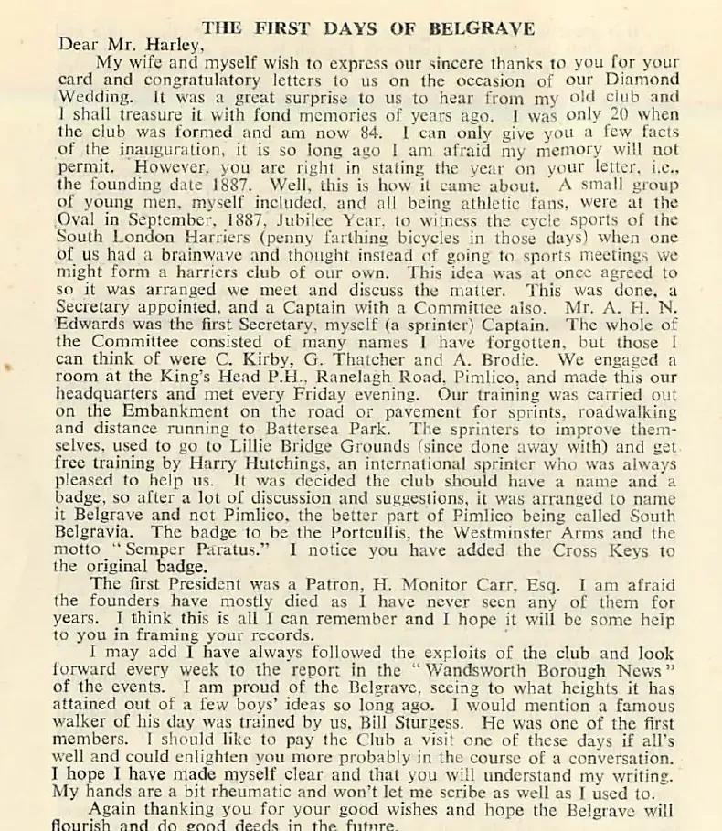<figcaption>Page 4 of The Belgravian, August 1951 (printed No. 112)</figcaption></figure>
<div class="body">
<p class="meta"><time datetime="1887-09">September 1887</time><span class="cat">club</span><span class="ann past">Letter printed August 1951</span></p>
<h3>Founder J. H. Martyn recalls how the club began in 1887</h3>
<p class="printed"><span>As printed</span> THE FIRST DAYS OF BELGRAVE</p>
<blockquote>“I am proud of the Belgrave, seeing to what heights it has attained out of a few boys&#x27; ideas so long ago. …”</blockquote>
<p class="why">The only first-hand account of the club&#x27;s founding, from founder and first Captain J. H. Martyn, aged 84</p>
<p class="foot"><a href="https://www.belgraveharriers.com/belgravian#B112-08" target="_blank" rel="noopener">Read it in The Belgravian, August 1951 · B112-08 →</a><span class="dsrc">Date as printed</span></p>
</div></article>
<h2 class="decade" id="d1920s">1920s</h2>
<article class="m page">
<figure>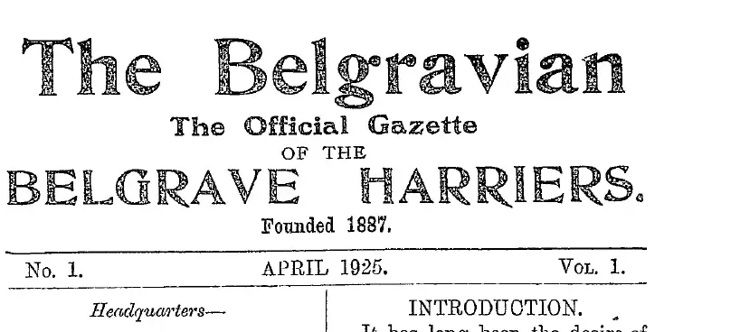<figcaption>Page 1 of The Belgravian, April 1925 (printed No. 1) <span class="from">From B2-01</span></figcaption></figure>
<div class="body">
<p class="meta"><time datetime="1925-04">April 1925</time><span class="cat">club</span><span class="ann past">100th passed</span></p>
<h3>The first Belgravian is published</h3>
<p class="printed"><span>As printed</span> Introduction</p>
<blockquote>“It is our intention of producing &quot;The Belgravian&quot; quarterly throughout this year when we hope to be justified in making a regular monthly appearance.”</blockquote>
<p class="why">First number of The Belgravian, the club gazette that ran until 2009.</p>
<p class="foot"><a href="https://www.belgraveharriers.com/belgravian#B2-02" target="_blank" rel="noopener">Read it in The Belgravian, April 1925 · B2-02 →</a><span class="dsrc">Month from the issue; day not printed</span></p>
</div></article>
<article class="m page">
<figure>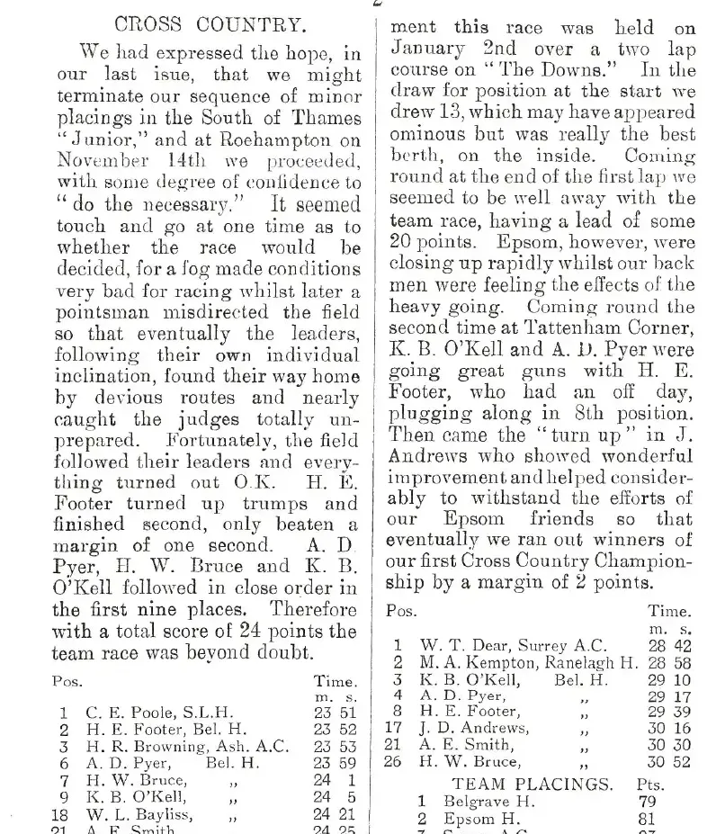<figcaption>Page 2 of The Belgravian, February 1926 (printed No. 4)</figcaption></figure>
<div class="body">
<p class="meta"><time datetime="1926-01-02">2 January 1926</time><span class="cat">xc</span><span class="ann past">100th passed</span></p>
<h3>First Surrey cross-country team title</h3>
<p class="printed"><span>As printed</span> CROSS COUNTRY.</p>
<blockquote>“Then came the &quot;turn up&quot; in J. Andrews who showed wonderful improvement and helped considerably to withstand the efforts of our Epsom friends so that eventually we ran out winners of our first Cross Country Championship by a margin of 2 points.”</blockquote>
<p class="why">Belgrave win their first cross-country championship, the Surrey County team title, by 2 points from Epsom.</p>
<p class="foot"><a href="https://www.belgraveharriers.com/belgravian#B5-03" target="_blank" rel="noopener">Read it in The Belgravian, February 1926 · B5-03 →</a><span class="dsrc">Date as printed</span></p>
</div></article>
<h2 class="decade" id="d1930s">1930s</h2>
<article class="m page">
<figure>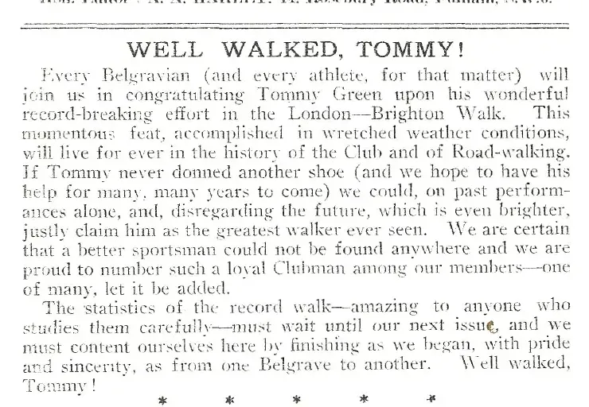<figcaption>Page 3 of The Belgravian, August 1930 (printed 7th Edition, 1930)</figcaption></figure>
<div class="body">
<p class="meta"><time datetime="1930-09-13">13 September 1930</time><span class="cat">walking</span><span class="ann">100th · 13 September 2030</span></p>
<h3>Tommy Green breaks the London to Brighton walk record</h3>
<p class="printed"><span>As printed</span> WELL WALKED, TOMMY!</p>
<blockquote>“This momentous feat, accomplished in wretched weather conditions, will live for ever in the history of the Club and of Road-walking.”</blockquote>
<p class="why">Tommy Green breaks H. V. L. Ross&#x27;s 21-year-old London to Brighton record; the gazette says it &#x27;will live for ever in the history of the Club&#x27;.</p>
<p class="foot"><a href="https://www.belgraveharriers.com/belgravian#B38-03" target="_blank" rel="noopener">Read it in The Belgravian, August 1930 · B38-03 →</a><span class="dsrc">Date as printed</span></p>
</div></article>
<article class="m page">
<figure>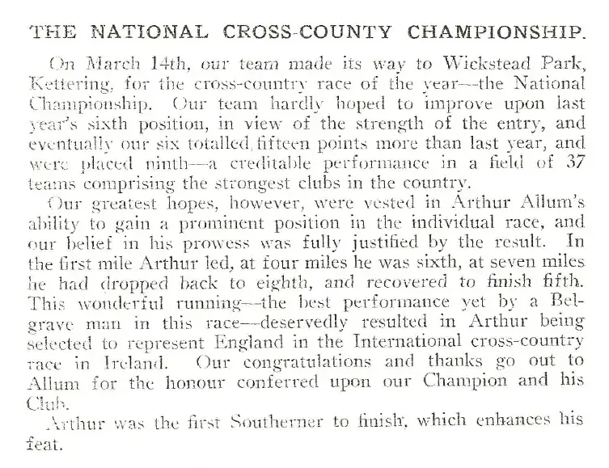<figcaption>Page 5 of The Belgravian, May 1931 (printed 3rd Edition, 1931)</figcaption></figure>
<div class="body">
<p class="meta"><time datetime="1931-03-14">14 March 1931</time><span class="cat">xc</span><span class="ann">100th · 14 March 2031</span></p>
<h3>Arthur Allum is picked for England at cross-country</h3>
<p class="printed"><span>As printed</span> THE NATIONAL CROSS-COUNTY CHAMPIONSHIP.</p>
<blockquote>“This wonderful running—the best performance yet by a Belgrave man in this race—deservedly resulted in Arthur being selected to represent England in the International cross-country race in Ireland.”</blockquote>
<p class="why">Arthur Allum finishes 5th in the National and becomes the club&#x27;s first cross-country international, scoring for the winning England team in Dublin.</p>
<p class="foot"><a href="https://www.belgraveharriers.com/belgravian#B43-05" target="_blank" rel="noopener">Read it in The Belgravian, May 1931 · B43-05 →</a><span class="dsrc">Date as printed</span></p>
</div></article>
<article class="m photo">
<figure>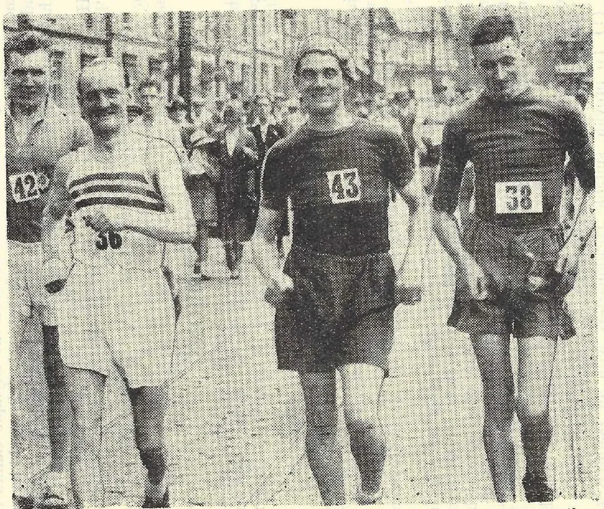<figcaption>J. C. Bidgood, T. W. Green (in Olympic vest), F. Rickards and F. E. Bentley. &quot;Four Famous Walkers.&quot; This was the title given to this photograph when it appeared in the Birmingham Sunday Mercury. <span class="from">From B59-19</span></figcaption></figure>
<div class="body">
<p class="meta"><time datetime="1932-08-03">3 August 1932</time><span class="cat">international</span><span class="ann">100th · 3 August 2032</span></p>
<h3>Tommy Green wins the first Olympic 50 km walk</h3>
<p class="printed"><span>As printed</span> <i>no headline (editorial)</i></p>
<blockquote>“It is every athlete&#x27;s ambition—although it must, of necessity, be denied to thousands of us—to gain a “First” when representing his country in the Olympic Games; and to know that two such are associated with our Club is to fill us with pride, and mark a very definite stage in our Club history.”</blockquote>
<p class="why">Two Belgrave members, Tommy Green (50 km walk) and second-claim Tom Hampson (800 m), win Olympic gold at Los Angeles: &#x27;a very definite stage in our Club history&#x27;.</p>
<p class="foot"><a href="https://www.belgraveharriers.com/belgravian#B54-04" target="_blank" rel="noopener">Read it in The Belgravian, August 1932 · B54-04 →</a><span class="dsrc">Day from the historical record; event confirmed in the text</span></p>
</div></article>
<article class="m photo">
<figure>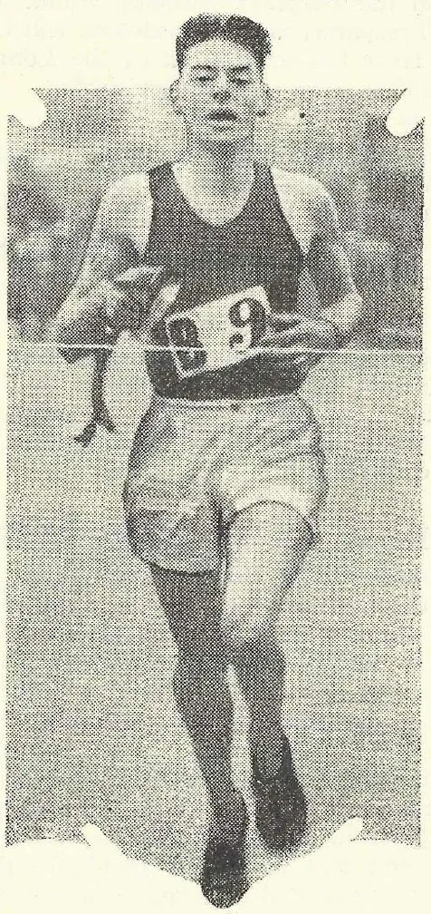<figcaption>Arthur Allum breaking the tape at Brighton. <span class="from">From B64-03</span></figcaption></figure>
<div class="body">
<p class="meta"><time datetime="1934-04-14">14 April 1934</time><span class="cat">road</span><span class="ann">100th · 14 April 2034</span></p>
<h3>First win in the London to Brighton Relay</h3>
<p class="printed"><span>As printed</span> THE BRIGHTON RELAY.</p>
<blockquote>“What a thrill we experienced as Arthur broke the tape, for we had been waiting and hoping for years to see the Belgrave lead a class field home in this supreme test of team running.”</blockquote>
<p class="why">First win in the London to Brighton Relay, the era&#x27;s premier road relay, beating Poly and Birchfield.</p>
<p class="foot"><a href="https://www.belgraveharriers.com/belgravian#B64-08" target="_blank" rel="noopener">Read it in The Belgravian, June 1934 · B64-08 →</a><span class="dsrc">Date as printed</span></p>
</div></article>
<article class="m page">
<figure>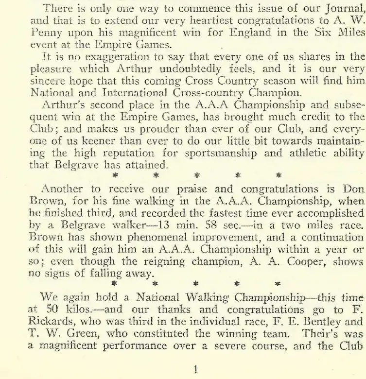<figcaption>Page 3 of The Belgravian, July-August 1934 (printed 4th Edition, 1934)</figcaption></figure>
<div class="body">
<p class="meta"><time datetime="1934-08">August 1934</time><span class="cat">international</span><span class="ann">100th · August 2034</span></p>
<h3>Arthur Penny wins the Empire Games six miles</h3>
<p class="printed"><span>As printed</span> <i>no headline (editorial)</i></p>
<blockquote>“There is only one way to commence this issue of our Journal, and that is to extend our very heartiest congratulations to A. W. Penny upon his magnificent win for England in the Six Miles event at the Empire Games.”</blockquote>
<p class="why">Arthur Penny wins the Six Miles for England at the British Empire Games - a Belgrave runner&#x27;s first major Games title.</p>
<p class="foot"><a href="https://www.belgraveharriers.com/belgravian#B65-03" target="_blank" rel="noopener">Read it in The Belgravian, July-August 1934 · B65-03 →</a><span class="dsrc">Month from the issue; day not printed</span></p>
</div></article>
<article class="m photo">
<figure>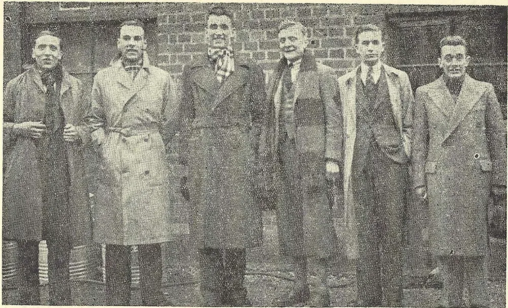<figcaption>OUR WINNING TEAM. H. W. Shields. D. Patience. J. Ginty. C. T. Carter. A. E. Taylor. H. E. Footer. <span class="from">From B68-20</span></figcaption></figure>
<div class="body">
<p class="meta"><time datetime="1935-03-09">9 March 1935</time><span class="cat">xc</span><span class="ann">100th · 9 March 2035</span></p>
<h3>First English National cross-country title</h3>
<p class="printed"><span>As printed</span> THE ENGLISH CROSS-COUNTRY CHAMPIONSHIP, BEACONSFIELD, MARCH 9th, 1935.</p>
<blockquote>“In the last mile our boys gave all they had, and we had the remarkable scoring sequence of 11th, 14th, 15th, 18th, 19th, 20th places. Better packing can never have been seen before, and the scoring epitomises the team spirit existent in our ranks.”</blockquote>
<p class="why">Belgrave&#x27;s first English (National) cross-country title, taking it from Birchfield, holders for seven years; first Southern club to win since before WW1.</p>
<p class="foot"><a href="https://www.belgraveharriers.com/belgravian#B68-04" target="_blank" rel="noopener">Read it in The Belgravian, February-March 1935 · B68-04 →</a><span class="dsrc">Date as printed</span></p>
</div></article>
<article class="m page">
<figure>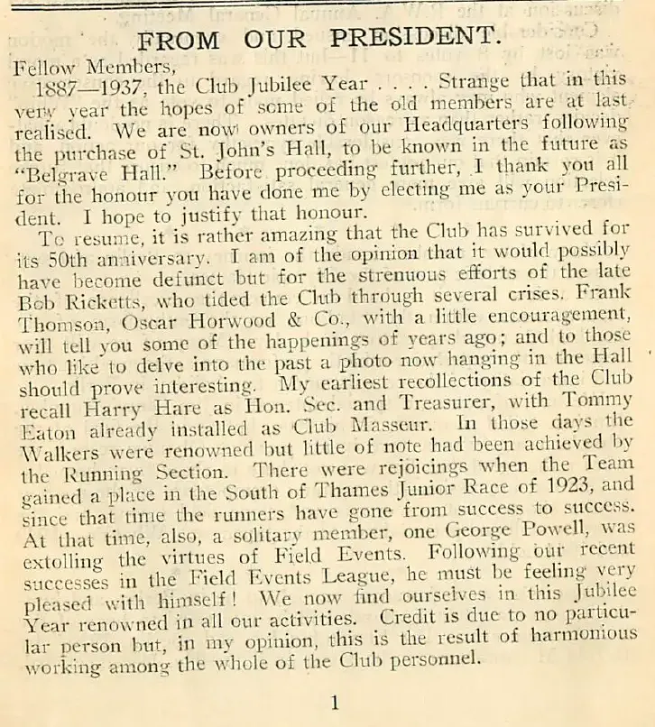<figcaption>Page 3 of The Belgravian, November 1936 (printed 4th Edition, 1936)</figcaption></figure>
<div class="body">
<p class="meta"><time datetime="1936-11">November 1936</time><span class="cat">club</span><span class="ann">100th · November 2036</span></p>
<h3>St. John&#x27;s Hall, Wimbledon, becomes Belgrave Hall</h3>
<p class="printed"><span>As printed</span> FROM OUR PRESIDENT.</p>
<blockquote>“1887—1937, the Club Jubilee Year . . . . Strange that in this very year the hopes of some of the old members are at last realised. We are now owners of our Headquarters following the purchase of St. John&#x27;s Hall, to be known in the future as &quot;Belgrave Hall.&quot;”</blockquote>
<p class="why">The club acquires its own headquarters, St. John&#x27;s Hall, Wimbledon, renamed Belgrave Hall, after years of Building Fund appeals.</p>
<p class="foot"><a href="https://www.belgraveharriers.com/belgravian#B75-03" target="_blank" rel="noopener">Read it in The Belgravian, November 1936 · B75-03 →</a><span class="dsrc">Month from the issue; day not printed</span></p>
</div></article>
<article class="m page">
<figure>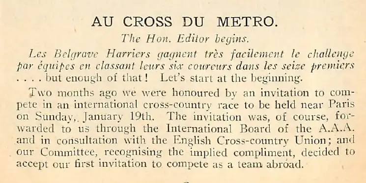<figcaption>Page 4 of The Belgravian, February 1937 (printed 1st Edition, 1937)</figcaption></figure>
<div class="body">
<p class="meta"><time datetime="1937-01">January 1937</time><span class="cat">international</span><span class="ann">100th · January 2037</span></p>
<h3>First race abroad: a team win in Paris</h3>
<p class="printed"><span>As printed</span> AU CROSS DU METRO.</p>
<blockquote>“So, as you all know, Belgrave won their first Continental cross-country race.”</blockquote>
<p class="why">The club&#x27;s first team trip abroad: Belgrave win the U.S.M. international cross-country at La Croix de Berny, Paris.</p>
<p class="foot"><a href="https://www.belgraveharriers.com/belgravian#B76-04" target="_blank" rel="noopener">Read it in The Belgravian, February 1937 · B76-04 →</a><span class="dsrc">Month from the issue; day not printed</span></p>
</div></article>
<article class="m page">
<figure>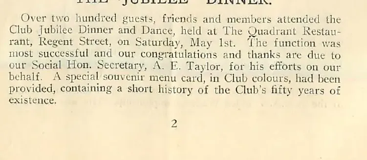<figcaption>Page 4 of The Belgravian, June 1937 (printed 2nd Edition, 1937)</figcaption></figure>
<div class="body">
<p class="meta"><time datetime="1937-05-01">1 May 1937</time><span class="cat">club</span><span class="ann">100th · 1 May 2037</span></p>
<h3>Golden Jubilee dinner in Regent Street</h3>
<p class="printed"><span>As printed</span> THE &quot;JUBILEE&quot; DINNER.</p>
<blockquote>“Over two hundred guests, friends and members attended the Club Jubilee Dinner and Dance, held at The Quadrant Restaurant, Regent Street, on Saturday, May 1st.”</blockquote>
<p class="why">The club&#x27;s Golden Jubilee (1887-1937) celebrated with a dinner and dance for over 200.</p>
<p class="foot"><a href="https://www.belgraveharriers.com/belgravian#B77-04" target="_blank" rel="noopener">Read it in The Belgravian, June 1937 · B77-04 →</a><span class="dsrc">Date as printed</span></p>
</div></article>
<article class="m page">
<figure>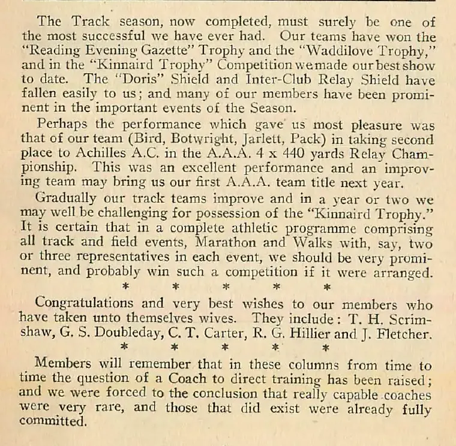<figcaption>Page 3 of The Belgravian, September 1938 (printed 3rd Edition, 1938)</figcaption></figure>
<div class="body">
<p class="meta"><time datetime="1938-09">September 1938</time><span class="cat">club</span><span class="ann">100th · September 2038</span></p>
<h3>Franz Stampfl joins as club coach</h3>
<p class="printed"><span>As printed</span> <i>no headline (editorial)</i></p>
<blockquote>“During the past months, however, we were fortunate in securing the services of a Continental coach, Herr F. Stampfl, whose vivacious enthusiasm and expert knowledge soon endeared him to our members.”</blockquote>
<p class="why">The club engages Franz Stampfl, the Austrian coach later famous for Bannister&#x27;s four-minute mile, as its coach.</p>
<p class="foot"><a href="https://www.belgraveharriers.com/belgravian#B82-03" target="_blank" rel="noopener">Read it in The Belgravian, September 1938 · B82-03 →</a><span class="dsrc">Month from the issue; day not printed</span></p>
</div></article>
<h2 class="decade" id="d1940s">1940s</h2>
<article class="m page">
<figure>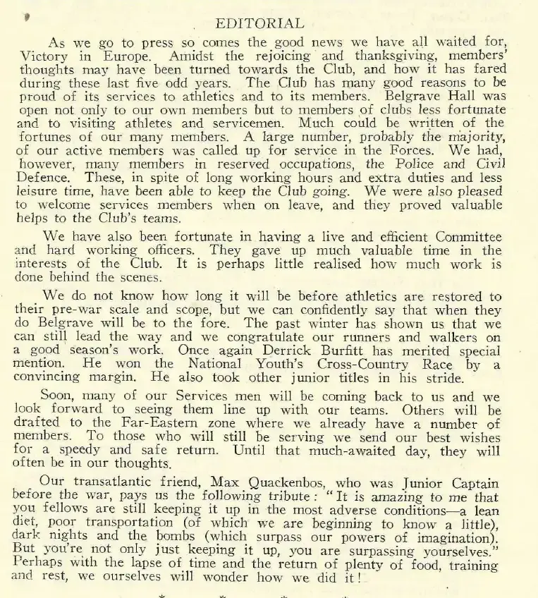<figcaption>Page 3 of The Belgravian, July 1945 (printed No. 97)</figcaption></figure>
<div class="body">
<p class="meta"><time datetime="1945-05-08">8 May 1945</time><span class="cat">club</span><span class="ann">100th · 8 May 2045</span></p>
<h3>Victory in Europe: how the club kept going through the war</h3>
<p class="printed"><span>As printed</span> EDITORIAL</p>
<blockquote>“&quot;It is amazing to me that you fellows are still keeping it up in the most adverse conditions—a lean diet, poor transportation (of which we are beginning to know a little), dark nights and the bombs (which surpass our powers of imagination). But you&#x27;re not only just keeping it up, you are surpassing yourselves.&quot;”</blockquote>
<p class="why">VE Day: the gazette looks back on how the club kept going through the war with Belgrave Hall open to all</p>
<p class="foot"><a href="https://www.belgraveharriers.com/belgravian#B97-04" target="_blank" rel="noopener">Read it in The Belgravian, July 1945 · B97-04 →</a><span class="dsrc">Day from the historical record; event confirmed in the text</span></p>
</div></article>
<article class="m page">
<figure>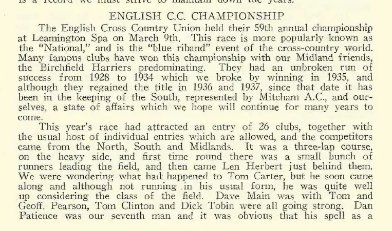<figcaption>Page 18 of The Belgravian, June 1946 (printed No. 99)</figcaption></figure>
<div class="body">
<p class="meta"><time datetime="1946-03-09">9 March 1946</time><span class="cat">xc</span><span class="ann">100th · 9 March 2046</span></p>
<h3>National cross-country title kept at the first post-war race</h3>
<p class="printed"><span>As printed</span> ENGLISH C.C. CHAMPIONSHIP</p>
<blockquote>“We asked the Birchfield scorer his score and the answer was 106, whoopee, we had won the title once again.”</blockquote>
<p class="why">First post-war National: Belgrave, the 1939 holders, beat Birchfield by ten points to keep the English cross-country title</p>
<p class="foot"><a href="https://www.belgraveharriers.com/belgravian#B99-28" target="_blank" rel="noopener">Read it in The Belgravian, June 1946 · B99-28 →</a><span class="dsrc">Date as printed</span></p>
</div></article>
<article class="m photo">
<figure>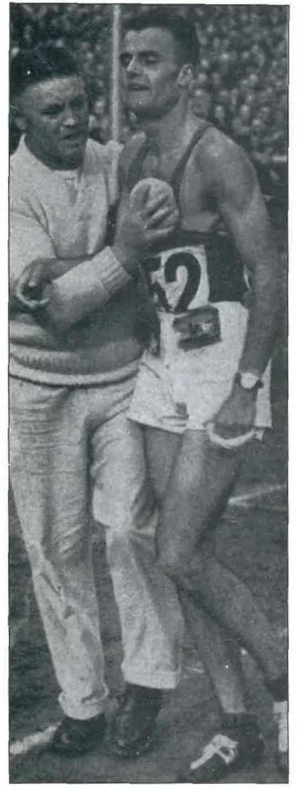<figcaption>A shattered Etienne Gailly is led away from the finish of the Olympic Marathon of 1948. <span class="from">From B227-36</span></figcaption></figure>
<div class="body">
<p class="meta"><time datetime="1948-08-07">7 August 1948</time><span class="cat">international</span><span class="ann">100th · 7 August 2048</span></p>
<h3>Belgravians at the Wembley Olympics; Gailly&#x27;s marathon</h3>
<p class="printed"><span>As printed</span> Olympic Games.</p>
<blockquote>“Of Etienne Gailly, running for his country—Belgium—better known to some of us during the war as &quot;Steve&quot; and his very gallant effort in the Marathon will probably be talked of in the future almost as much as the memorable &quot;Dorando&quot; marathon. Etienne led practically all the way and was first to enter the Stadium but he had run himself to a standstill and was eventually third, his time being 2 hrs. 35 mins. 33 secs.”</blockquote>
<p class="why">Home Olympics: Nankeville 6th in the 1,500 m, Churcher 5th in the 10,000 m walk, and wartime member Etienne Gailly&#x27;s famous marathon bronze for Belgium</p>
<p class="foot"><a href="https://www.belgraveharriers.com/belgravian#B104-04" target="_blank" rel="noopener">Read it in The Belgravian, November 1948 · B104-04 →</a><span class="dsrc">Day from the historical record; event confirmed in the text</span></p>
</div></article>
<h2 class="decade" id="d1950s">1950s</h2>
<article class="m page">
<figure>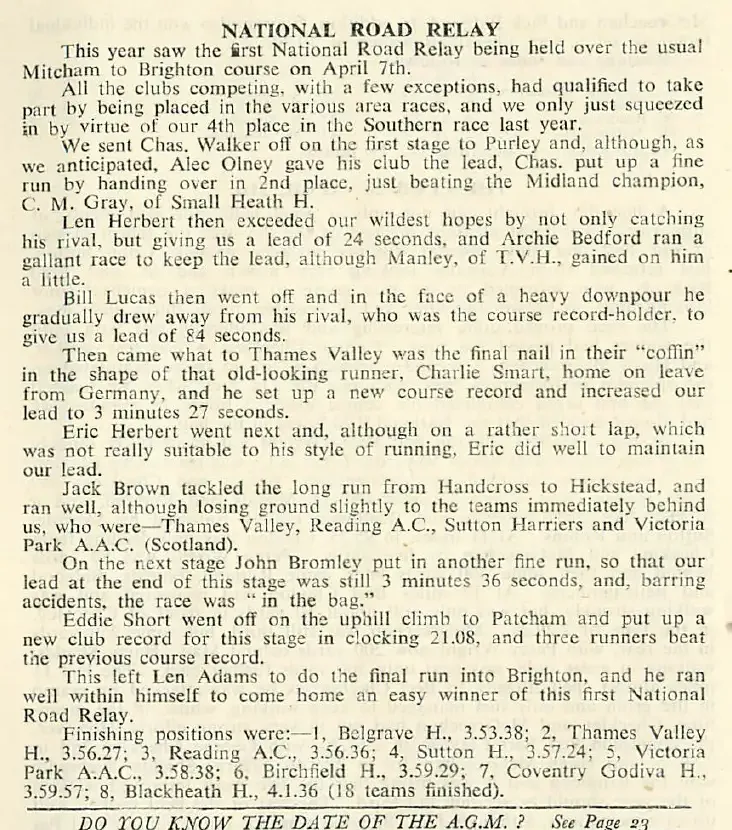<figcaption>Page 9 of The Belgravian, August 1951 (printed No. 112)</figcaption></figure>
<div class="body">
<p class="meta"><time datetime="1951-04-07">7 April 1951</time><span class="cat">road</span><span class="ann">100th · 7 April 2051</span></p>
<h3>Belgrave win the first National Road Relay</h3>
<p class="printed"><span>As printed</span> NATIONAL ROAD RELAY</p>
<blockquote>“Then came what to Thames Valley was the final nail in their &quot;coffin&quot; in the shape of that old-looking runner, Charlie Smart, home on leave from Germany, and he set up a new course record and increased our lead to 3 minutes 27 seconds.”</blockquote>
<p class="why">Belgrave win the first ever National Road Relay (London to Brighton), a national title the club made its own</p>
<p class="foot"><a href="https://www.belgraveharriers.com/belgravian#B112-16" target="_blank" rel="noopener">Read it in The Belgravian, August 1951 · B112-16 →</a><span class="dsrc">Date as printed</span></p>
</div></article>
<article class="m page">
<figure>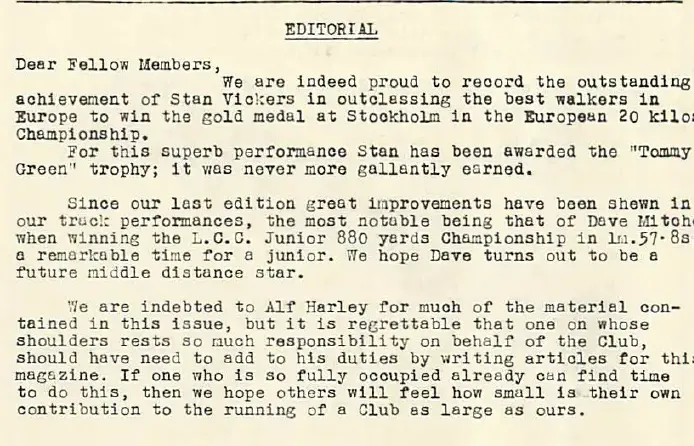<figcaption>Page 2 of The Belgravian, October 1958 (printed No. 136)</figcaption></figure>
<div class="body">
<p class="meta"><time datetime="1958-08">August 1958</time><span class="cat">walking</span><span class="ann">75th · August 2033</span></p>
<h3>Stan Vickers is European 20 km walk champion</h3>
<p class="printed"><span>As printed</span> Editorial</p>
<blockquote>“We are indeed proud to record the outstanding achievement of Stan Vickers in outclassing the best walkers in Europe to win the gold medal at Stockholm in the European 20 kilos. Championship.”</blockquote>
<p class="why">Stan Vickers becomes European 20 km walk champion, the club&#x27;s first European title in this era</p>
<p class="foot"><a href="https://www.belgraveharriers.com/belgravian#B136-03" target="_blank" rel="noopener">Read it in The Belgravian, October 1958 · B136-03 →</a><span class="dsrc">Month from the issue; day not printed</span></p>
</div></article>
<h2 class="decade" id="d1960s">1960s</h2>
<article class="m photo">
<figure>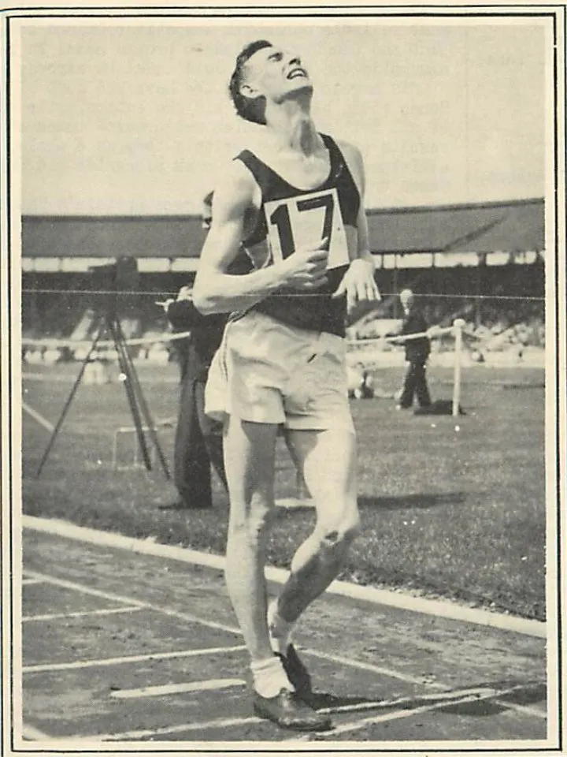<figcaption>Cover Photo. by E.D.Lacey : S.F. VICKERS <span class="from">From B143-01</span></figcaption></figure>
<div class="body">
<p class="meta"><time datetime="1960-09-02">2 September 1960</time><span class="cat">walking</span><span class="ann">75th · 2 September 2035</span></p>
<h3>Stan Vickers takes Olympic 20 km walk bronze in Rome</h3>
<p class="printed"><span>As printed</span> EDITORIAL</p>
<blockquote>“Salute STANLEY F. VICKERS! Britain&#x27;s most reliable athletics competitor brings home to his Club and Country an Olympic bronze medal to rest alongside the European Gold Medal he already holds.”</blockquote>
<p class="why">Stan Vickers wins Olympic bronze at Rome; three Belgravians at one Games (Vickers, Eric Hall 10th, Ranjit Bhatia for India) - a club record.</p>
<p class="foot"><a href="https://www.belgraveharriers.com/belgravian#B143-03" target="_blank" rel="noopener">Read it in The Belgravian, September 1960 · B143-03 →</a><span class="dsrc">Day from the historical record; event confirmed in the text</span></p>
</div></article>
<article class="m photo">
<figure>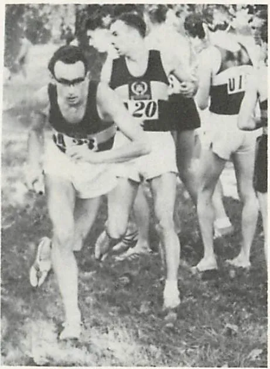<figcaption>LEFT:Barry Sawyer looks for the opposition after giving John Thresher an 8 second lead at the first change-over. <span class="from">From B152-20</span></figcaption></figure>
<div class="body">
<p class="meta"><time datetime="1963-10-19">19 October 1963</time><span class="cat">road</span><span class="ann">75th · 19 October 2038</span></p>
<h3>Barry Sawyer sets a world best for 25 miles</h3>
<p class="printed"><span>As printed</span> World Best For SAWYER</p>
<blockquote>“Another episode in the annals of Belgrave Harriers was recorded at Stompond Lane track, Walton, on October 19th---writes Gordon Doubleday--- when Barry Sawyer, at the peak of form, set a new World&#x27;s best mark for 25 miles of 2:17:10.”</blockquote>
<p class="why">Barry Sawyer sets a world best for 25 miles on the track (2:17:10) - a rare Belgrave world mark outside walking.</p>
<p class="foot"><a href="https://www.belgraveharriers.com/belgravian#B152-57" target="_blank" rel="noopener">Read it in The Belgravian, December 1963 · B152-57 →</a><span class="dsrc">Date as printed</span></p>
</div></article>
<article class="m photo">
<figure>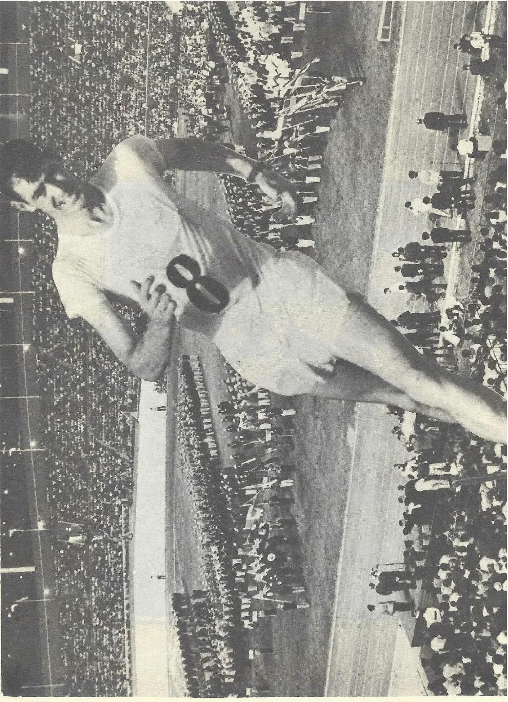<figcaption>British Empire and Commonwealth Games silver-medallist Ray Middleton and the opening ceremony of the Games in Kingston, Jamaica. <span class="from">From B160-02</span></figcaption></figure>
<div class="body">
<p class="meta"><time datetime="1966-08">August 1966</time><span class="cat">walking</span><span class="ann">75th · August 2041</span></p>
<h3>Ray Middleton wins Commonwealth Games walk silver</h3>
<p class="printed"><span>As printed</span> EDITORIAL</p>
<blockquote>“As a medal winner,Ray now joins that illustrious pair of Belgravians Tommy Green (Olympic Gold) and Stan Vickers (Olympic Bronze and European Gold).”</blockquote>
<p class="why">Ray Middleton wins Commonwealth Games silver in the 20 miles walk at Kingston, joining Tommy Green and Stan Vickers as Belgrave Games medallists.</p>
<p class="foot"><a href="https://www.belgraveharriers.com/belgravian#B159-04" target="_blank" rel="noopener">Read it in The Belgravian, August 1966 · B159-04 →</a><span class="dsrc">Month from the issue; day not printed</span></p>
</div></article>
<article class="m photo">
<figure>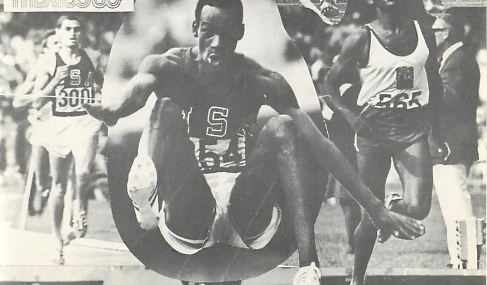<figcaption>CENTRE:Keino (Ken) beats Ryun (USA) by a &#x27;street&#x27; to take 1500m. / CENTRE: The scoop of them all! Bob Beamon (USA) soars to his fantastic world record of 29&#x27;-2½&quot;.</figcaption></figure>
<div class="body">
<p class="meta"><time datetime="1968-10-18">18 October 1968</time><span class="cat">other</span><span class="ann">75th · 18 October 2043</span></p>
<h3>Club member Ed Lacey&#x27;s Beamon photo defines Mexico 1968</h3>
<p class="printed"><span>As printed</span> Olympics</p>
<blockquote>“His shot of Bob Beamon soaring 29&#x27;-2½&quot; across the long jump pit warranted a whole page and is the photograph by which posterity will remember Mexico 1968--and by which Belgravians will be reminded that winning races is not the only way of bringing fame to Belgrave.”</blockquote>
<p class="why">Club member Ed Lacey, photographer of so many Belgravian pages, takes the Bob Beamon long-jump picture that defined Mexico 1968.</p>
<p class="foot"><a href="https://www.belgraveharriers.com/belgravian#B168-47" target="_blank" rel="noopener">Read it in The Belgravian, December 1968 · B168-47 →</a><span class="dsrc">Day from the historical record; event confirmed in the text</span></p>
</div></article>
<h2 class="decade" id="d1970s">1970s</h2>
<article class="m photo">
<figure>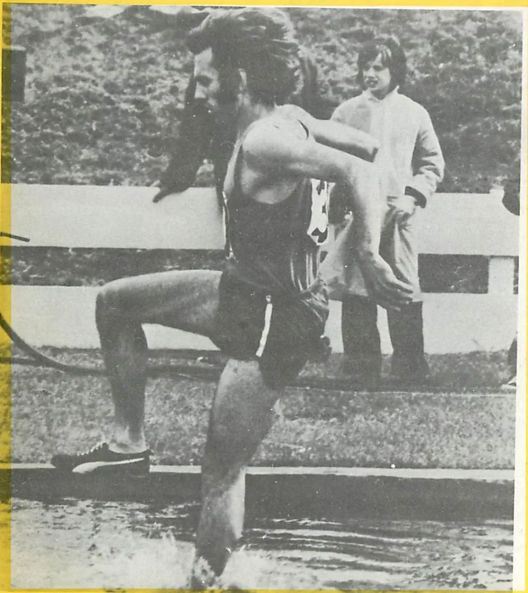<figcaption>JOHN BICOURT, who was selected by Great Britain to compete in the 3,000 metres steeplechase at the Olympic Games, Munich 1972, seen here running for Surrey in the Inter-Counties. <span class="from">From B178-01</span></figcaption></figure>
<div class="body">
<p class="meta"><time datetime="1972-09">September 1972</time><span class="cat">international</span><span class="ann">75th · September 2047</span></p>
<h3>Three Belgravians at the Munich Olympics</h3>
<p class="printed"><span>As printed</span> <i>no headline (editorial)</i></p>
<blockquote>“Our belated congratulations go out to three Belgravians who achieved selection for the 1972 Olympic Games in Munich.”</blockquote>
<p class="why">Three Belgravians at one Olympics: John Bicourt (GB steeplechase), Wil Wesch (West Germany 20 km walk) and Cliff Brooks (Barbados decathlon).</p>
<p class="foot"><a href="https://www.belgraveharriers.com/belgravian#B178-05" target="_blank" rel="noopener">Read it in The Belgravian, September 1972 · B178-05 →</a><span class="dsrc">Month from the issue; day not printed</span></p>
</div></article>
<article class="m photo">
<figure>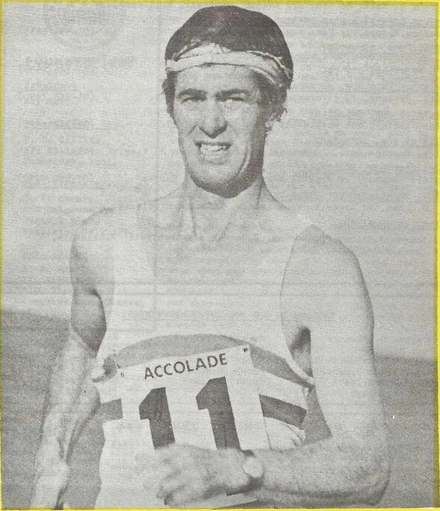<figcaption>Front page: 1974 was a good year for Ray Middleton - winner of the London to Brighton, Hastings to Brighton and Accolade 8 Hour walks, setting five new world best performances in the latter. <span class="from">From B187-01</span></figcaption></figure>
<div class="body">
<p class="meta"><time datetime="1974-09-29">29 September 1974</time><span class="cat">walking</span><span class="ann">75th · 29 September 2049</span></p>
<h3>Ray Middleton sets five world bests in an 8-hour walk</h3>
<p class="printed"><span>As printed</span> MIDDLETON SETS WORLD BESTS</p>
<blockquote>“The previous records had been set by H.W.Whitlock (Met. WC) on October 5th 1935. Harold, now 70 years old, was present on this occasion as walking judge.”</blockquote>
<p class="why">Ray Middleton breaks 39-year-old world best walking marks for 6, 7 and 8 hours, 40 and 50 miles - with the old record holder judging.</p>
<p class="foot"><a href="https://www.belgraveharriers.com/belgravian#B187-17" target="_blank" rel="noopener">Read it in The Belgravian, December 1974 · B187-17 →</a><span class="dsrc">Date as printed</span></p>
</div></article>
<article class="m photo">
<figure>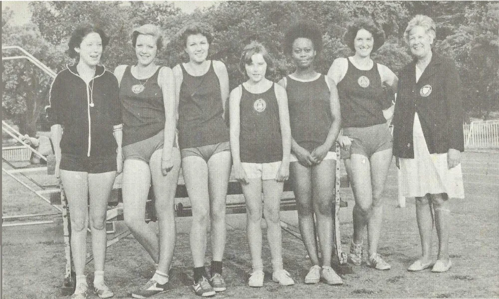<figcaption>Back Page: Meet some of the &#x27;Belles&#x27;. Left to right - Wendy Richardson, Jane Pritchard, Anna Matthews, Tina Couzens, Joan Samuels, Pat Mead and Win Shepherd. <span class="from">From B192-100</span></figcaption></figure>
<div class="body">
<p class="meta"><time datetime="1976-07-01">1 July 1976</time><span class="cat">club</span><span class="ann">75th · 1 July 2051</span></p>
<h3>The club votes to admit women</h3>
<p class="printed"><span>As printed</span> <i>no headline (editorial)</i></p>
<blockquote>“This decision was not taken lightly and when viewed objectively without the sentiment of our all male heritage there is no doubt that the future of club athletics lies in mixed clubs.”</blockquote>
<p class="why">Belgrave ends 89 years as an all-male club; the Ladies Section transforms membership, the Hall and the club&#x27;s future.</p>
<p class="foot"><a href="https://www.belgraveharriers.com/belgravian#B191-05" target="_blank" rel="noopener">Read it in The Belgravian, March 1976 · B191-05 →</a><span class="dsrc">Date as printed</span></p>
</div></article>
<article class="m photo">
<figure>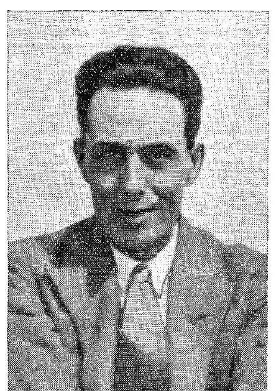<figcaption>OUR PRESIDENT—W. H. HARE, Esq. (The Belgravian, October 1928: the first photograph printed in the gazette) <span class="from">From B20-03</span></figcaption></figure>
<div class="body">
<p class="meta"><time datetime="1977-04-23">23 April 1977</time><span class="cat">club</span><span class="ann">50th · 23 April 2027</span></p>
<h3>Harry Hare, founder of The Belgravian, dies</h3>
<p class="printed"><span>As printed</span> THE ACORN PLANTER</p>
<blockquote>“And when you, dear Belgravian next enter our modernised headquarters pause awhile and think for a moment - of Harry Hare and his contemporaries - the acorn planters.”</blockquote>
<p class="why">Tribute to the founder-editor of The Belgravian (1925) who found St John&#x27;s Hall in 1921 and started the Building Fund that bought Belgrave Hall - told in the year the Hall was extended.</p>
<p class="foot"><a href="https://www.belgraveharriers.com/belgravian#B195-40" target="_blank" rel="noopener">Read it in The Belgravian, October 1977 · B195-40 →</a><span class="dsrc">Date as printed</span></p>
</div></article>
<article class="m photo">
<figure>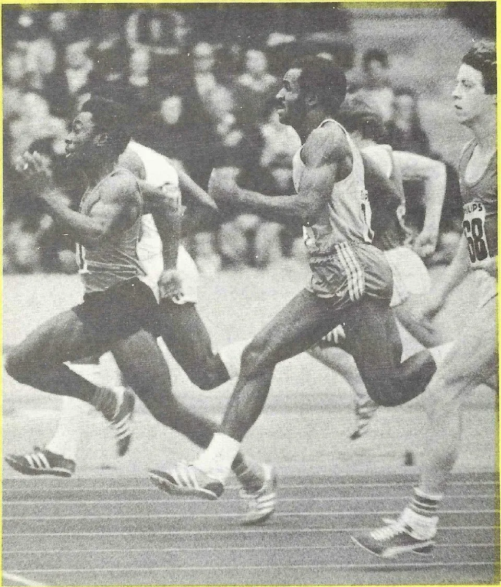<figcaption>Front Cover.
Ernest Obeng of Ghana and Belgrave Harriers beats Olympic 200 metre Champion Don Quarrie of Jamaica over 100 metres at the Philips Night of Athletics, Crystal Palace May 24th. <span class="from">From B197-01</span></figcaption></figure>
<div class="body">
<p class="meta"><time datetime="1978-05-24">24 May 1978</time><span class="cat">track</span><span class="ann">50th · 24 May 2028</span></p>
<h3>Ernest Obeng beats Olympic champion Don Quarrie</h3>
<p class="printed"><span>As printed</span> Great sprinting from Ernest Obeng</p>
<blockquote>“Ernie stormed down the straight heading the field all the way to defeat Quarrie - 10.3 to 10.4 (photo-electric timing not in use).”</blockquote>
<p class="why">Ernest Obeng beats Olympic champion Don Quarrie and then reaches the Commonwealth Games 100 m final at Edmonton for Ghana.</p>
<p class="foot"><a href="https://www.belgraveharriers.com/belgravian#B197-15" target="_blank" rel="noopener">Read it in The Belgravian, October 1978 · B197-15 →</a><span class="dsrc">Date as printed</span></p>
</div></article>
<h2 class="decade" id="d1980s">1980s</h2>
<article class="m photo">
<figure>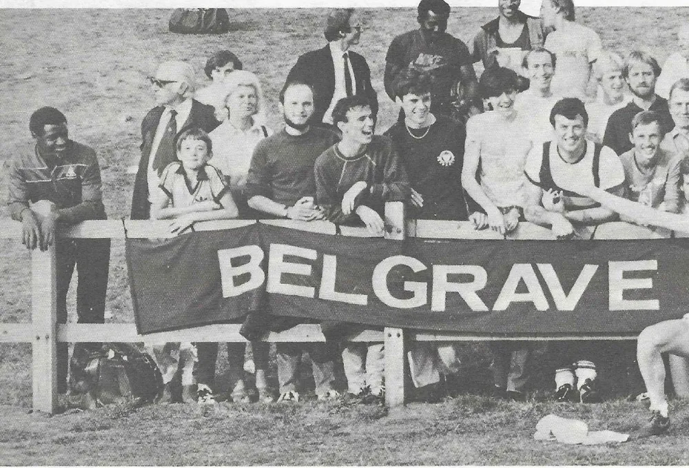<figcaption>THE WINNING BRITISH LEAGUE PROMOTION TEAM CELEBRATE PRIOR TO CHUCKIN[illegible]AUL RICHLEY(Front) IN THE WATER JUMP. [Photo - Bill Laws] <span class="from">From B205-47</span></figcaption></figure>
<div class="body">
<p class="meta"><time datetime="1982-08-31">31 August 1982</time><span class="cat">club</span><span class="ann">50th · 31 August 2032</span></p>
<h3>Surrey AC men join Belgrave; the club enters the British League</h3>
<p class="printed"><span>As printed</span> Welcome — THE &quot;AMALGAMATION&quot; - SURREY AC MEN JOIN BELGRAVE.</p>
<blockquote>“To quote Wellington. &quot;It was a damned close run thing&quot;.”</blockquote>
<p class="why">Surrey AC&#x27;s men&#x27;s section closes and merges into Belgrave, which wins its way into the British League amid controversy - the start of the 1980s revival.</p>
<p class="foot"><a href="https://www.belgraveharriers.com/belgravian#B205-11" target="_blank" rel="noopener">Read it in The Belgravian, October 1982 · B205-11 →</a><span class="dsrc">Date as printed</span></p>
</div></article>
<article class="m photo">
<figure>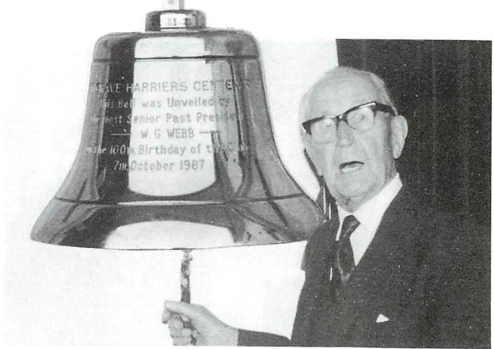<figcaption>Bill Webb has got an &quot;ology&quot; - Campanology - as he inaugurates the &quot;Centenary Bell&quot; which bears the inscription: &quot;This bell was unveiled by the most Senior past President - W.G.Webb - on the 100th Birthday of the Club 7 October 1987&quot;. The Bell was donated by Chas.Manning Past President.</figcaption></figure>
<div class="body">
<p class="meta"><time datetime="1987-10-07">7 October 1987</time><span class="cat">club</span><span class="ann">50th · 7 October 2037</span></p>
<h3>The club&#x27;s 100th birthday</h3>
<p class="printed"><span>As printed</span> CENTENARY CELEBRATIONS</p>
<blockquote>“Bill Webb, at 93 our most senior Past Presidsent, unveiled the new Centenary Bell which had been donated by Charlie Manning.”</blockquote>
<p class="why">The club&#x27;s 100th birthday, celebrated at Belgrave Hall exactly a century after the King&#x27;s Head meeting of 7 October 1887.</p>
<p class="foot"><a href="https://www.belgraveharriers.com/belgravian#B212-16" target="_blank" rel="noopener">Read it in The Belgravian, April 1988 · B212-16 →</a><span class="dsrc">Date as printed</span></p>
</div></article>
<article class="m photo">
<figure>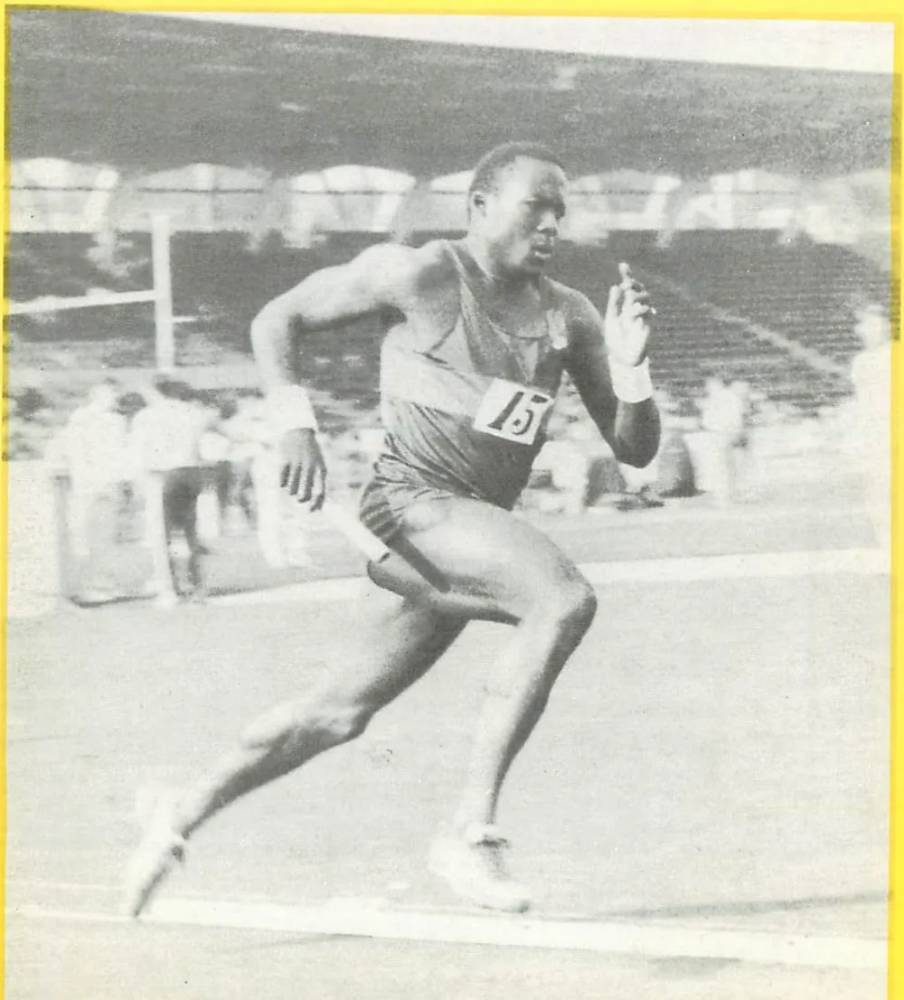<figcaption>Front Cover. Injured for much of the season John Regis has managed to peak for the big ones and has produced an incredible list of performances including; Winning the Junior AAA&#x27;s indoor 200m in a CBP, winning the U.K. Senior 200m, gaining an individual bronze in the European Junior 100m, a team gold in the short relay at the same Championship and culminating with a new Club record for the 200m of 20.78. <span class="from">From B209-01</span></figcaption></figure>
<div class="body">
<p class="meta"><time datetime="1989-03-04">4 March 1989</time><span class="cat">international</span><span class="ann">50th · 4 March 2039</span></p>
<h3>John Regis is World Indoor 200m champion</h3>
<p class="printed"><span>As printed</span> STOP PRESS - WORLD CHAMPION</p>
<blockquote>“JOHN REGIS bounced back to his best form when he won the World Indoor 200m with a record 20.54 secs. at Budapest on 4th March. His win was Britain&#x27;s first and so far only victory in these World Indoor Championships and augurs well for the summer.”</blockquote>
<p class="why">John Regis becomes World Indoor 200m champion - a Belgravian world title.</p>
<p class="foot"><a href="https://www.belgraveharriers.com/belgravian#B213-07" target="_blank" rel="noopener">Read it in The Belgravian, March 1989 · B213-07 →</a><span class="dsrc">Date as printed</span></p>
</div></article>
<h2 class="decade" id="d1990s">1990s</h2>
<article class="m photo">
<figure>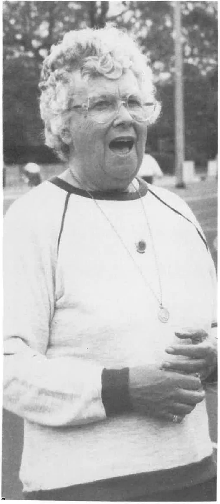<figcaption>Win is caught by the lens of Alex Apperley at a recent Club Championship meeting.</figcaption></figure>
<div class="body">
<p class="meta"><time datetime="1990">1990</time><span class="cat">club</span><span class="ann">50th · 2040</span></p>
<h3>Win Shepherd becomes the club&#x27;s first woman President</h3>
<p class="printed"><span>As printed</span> President of Belgrave Harriers 1990-91 — Win Shepherd writes ...</p>
<blockquote>“It gives me great pleasure to send you this message as your first Lady President.”</blockquote>
<p class="why">Win Shepherd becomes Belgrave&#x27;s first Lady President, a decade or so after women were first admitted - with Sue Porter (first female General Secretary, from 1 Jan 1988) a landmark for women in the club.</p>
<p class="foot"><a href="https://www.belgraveharriers.com/belgravian#B216-02" target="_blank" rel="noopener">Read it in The Belgravian, July 1991 · B216-02 →</a><span class="dsrc">Year only; day and month not printed</span></p>
</div></article>
<article class="m photo">
<figure>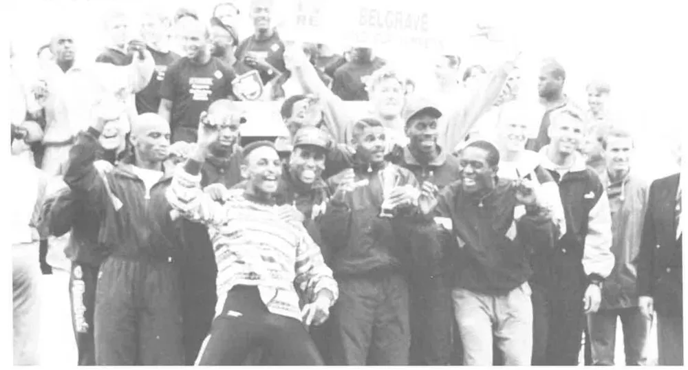<figcaption>GUARDIAN ROYAL EXCHANGE GOLD CUP WINNERS FOR THE SECOND TIME <span class="from">From B219-52</span></figcaption></figure>
<div class="body">
<p class="meta"><time datetime="1992-08-29">29 August 1992</time><span class="cat">track</span><span class="ann">50th · 29 August 2042</span></p>
<h3>British League and Cup champions for the first time</h3>
<p class="printed"><span>As printed</span> <i>no headline (editorial)</i></p>
<blockquote>“The irresistable progress of the last dozen years has culminated in Belgrave Harriers becoming British League and Cup Champions in 1992 and has offered us the chance to fight to become European Champions in 1993.”</blockquote>
<p class="why">Belgrave&#x27;s first British Athletics League title (with the Gold Cup) - the summit of the club&#x27;s 1980s-90s track rise, sending eight men to the Barcelona Olympics.</p>
<p class="foot"><a href="https://www.belgraveharriers.com/belgravian#B219-05" target="_blank" rel="noopener">Read it in The Belgravian, November 1992 · B219-05 →</a><span class="dsrc">Date as printed</span></p>
</div></article>
<article class="m photo">
<figure>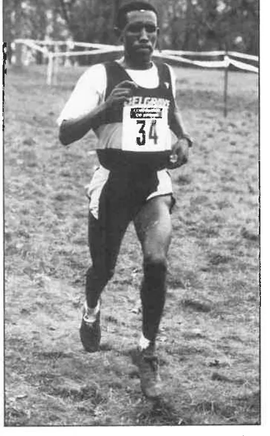<figcaption>Above: Kassa Tadesse out on his own on the second lap of the SEAA Junior Cross Country Championship. <span class="from">From B222-45</span></figcaption></figure>
<div class="body">
<p class="meta"><time datetime="1994-03-12">12 March 1994</time><span class="cat">xc</span><span class="ann">50th · 12 March 2044</span></p>
<h3>Kassa Tadesse is the club&#x27;s first National cross-country champion</h3>
<p class="printed"><span>As printed</span> Kassa - our first ever &quot;National&quot; winner — English CC Champs North Shields, 12 Mar</p>
<blockquote>“A very small Belgrave presence at North Shields was treated to a historic occasion as Kassa Tadesse became the first Belgrave Harrier ever to win an English National Cross Country title.”</blockquote>
<p class="why">First Belgravian ever to win an individual English National cross-country title (under-20 race).</p>
<p class="foot"><a href="https://www.belgraveharriers.com/belgravian#B222-46" target="_blank" rel="noopener">Read it in The Belgravian, February 1995 · B222-46 →</a><span class="dsrc">Date as printed</span></p>
</div></article>
<article class="m photo">
<figure>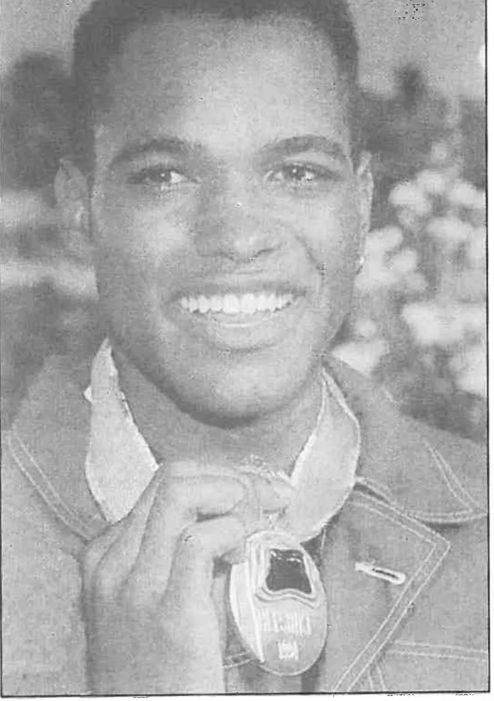<figcaption>The name Du&#x27;aine Ladejo became infinitely better known to the public after his golden exploits in Helsinki. Three times the 23 year-old reduced our 400m Club Record in 1994 but it doesn&#x27;t look as if it&#x27;s going to stop there for he was quoted after the European Championships final as saying, &quot;You haven&#x27;t seen anything yet&quot;.</figcaption></figure>
<div class="body">
<p class="meta"><time datetime="1994-08">August 1994</time><span class="cat">international</span><span class="ann">50th · August 2044</span></p>
<h3>Du&#x27;aine Ladejo is European 400m champion</h3>
<p class="printed"><span>As printed</span> Euro gold for Ladejo — Helsinki, Finland, 7-14 Aug</p>
<blockquote>“He had the strength to run down the leader over the last 50m and crossed the line with arms outstretched almost as wide as his smile. Britain 1st and 2nd in a classic confrontation and a &#x27;gold&#x27; for Belgrave.”</blockquote>
<p class="why">Du&#x27;aine Ladejo wins the European 400m title, beating defending champion Roger Black - a senior European outdoor gold for a Belgravian.</p>
<p class="foot"><a href="https://www.belgraveharriers.com/belgravian#B222-56" target="_blank" rel="noopener">Read it in The Belgravian, February 1995 · B222-56 →</a><span class="dsrc">Month from the issue; day not printed</span></p>
</div></article>
<article class="m photo">
<figure>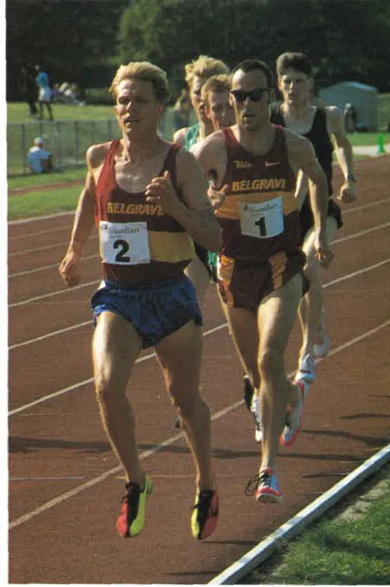<figcaption>4.At Kingsmeadow for BAL match 4 Paul Evans and Gary Staines toy with the opposition in the 5,000 metres before running in together for &#x27;A&#x27; and &#x27;B&#x27; wins, separated by the electrical timing by 1/100th! <span class="from">From B225-86</span></figcaption></figure>
<div class="body">
<p class="meta"><time datetime="1996-10-20">20 October 1996</time><span class="cat">road</span><span class="ann">50th · 20 October 2046</span></p>
<h3>Paul Evans wins the Chicago Marathon</h3>
<p class="printed"><span>As printed</span> Chicago Marathon, 20 Oct 1996: Evans races to 3rd fastest ever British Marathon time</p>
<blockquote>“By 23 miles he was a minute up and enjoying the sensation of cruising to his first ever marathon win in eleven attempts.”</blockquote>
<p class="why">Paul Evans wins the Chicago Marathon in 2:08:52, then the third-fastest marathon ever by a Briton, with Gary Staines fifth.</p>
<p class="foot"><a href="https://www.belgraveharriers.com/belgravian#B225-116" target="_blank" rel="noopener">Read it in The Belgravian, February 1997 · B225-116 →</a><span class="dsrc">Date as printed</span></p>
</div></article>
<h2 class="decade" id="d2000s">2000s</h2>
<article class="m photo">
<figure>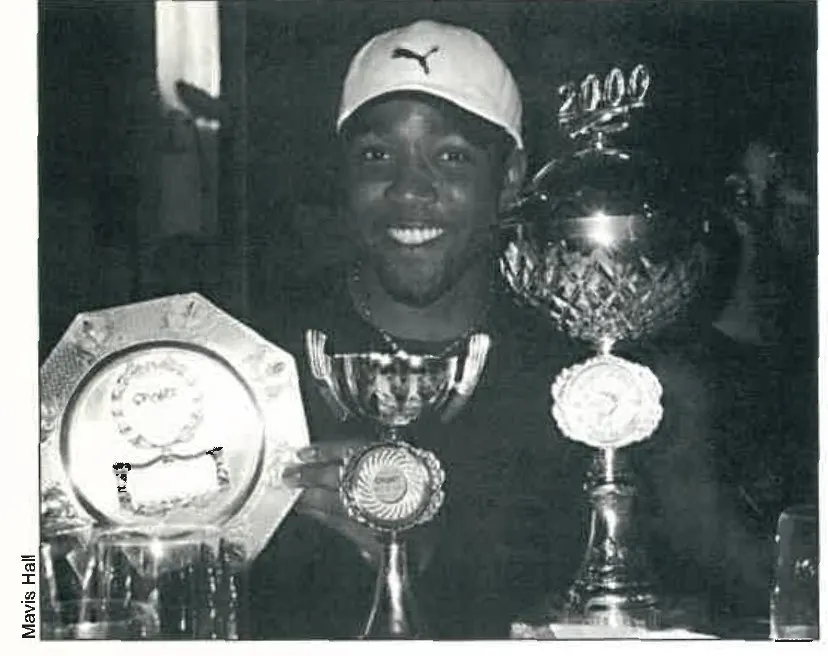<figcaption>Left: Sprint Ace Darren Campbell scooped the prizes at the European Champion Clubs Cup competition. Best runner, best overall performance and Captain of the winning Belgrave team!</figcaption></figure>
<div class="body">
<p class="meta"><time datetime="2000-05-28">28 May 2000</time><span class="cat">international</span><span class="ann">50th · 28 May 2050</span></p>
<h3>European Champion Clubs&#x27; Cup win in Liège</h3>
<p class="printed"><span>As printed</span> COUPE D&#x27;EUROPE des CLUBS CHAMPIONS BELGRAVE TRIUMPHANT!</p>
<blockquote>“Sean hung on, tackled his opponent at the bottom bend and then came strong in the final stages in the home straight to bring us home by 0.32 seconds and a 7 point win over the whole two days!”</blockquote>
<p class="why">Belgrave win Group B of the European Champion Clubs Cup in Liege, earning promotion to Group A (Madrid 2001).</p>
<p class="foot"><a href="https://www.belgraveharriers.com/belgravian#B229-37" target="_blank" rel="noopener">Read it in The Belgravian, February 2001 · B229-37 →</a><span class="dsrc">Date as printed</span></p>
</div></article>
<article class="m photo">
<figure>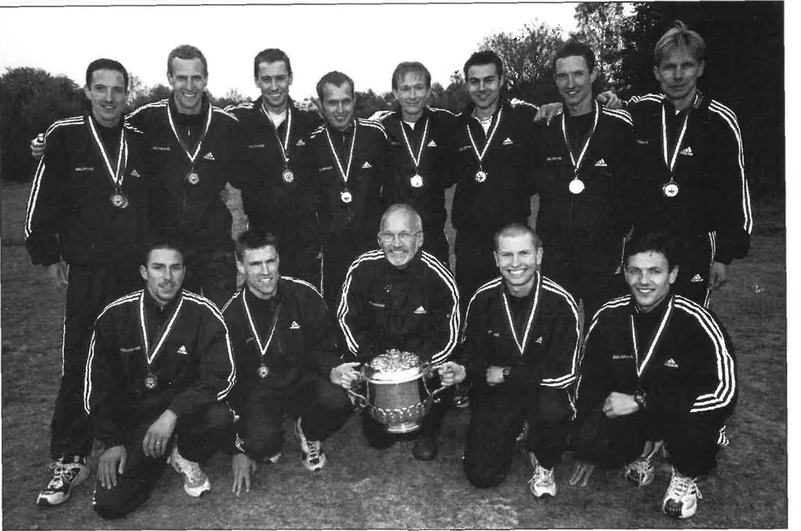<figcaption>Belgrave&#x27;s Winning AAA 12-Stage Team at Sutton Park. Back row: Andy Graffin, Spencer Barden, Paul Freary, Stephen Sharp, Alaster Stewart, David Anderson, Allen Graffin, Paul Evans. Front row: Lee Hurst, Mark Miles, Alan Mead (team manager), Richard Ward, Charles Herrington.</figcaption></figure>
<div class="body">
<p class="meta"><time datetime="2002-04-27">27 April 2002</time><span class="cat">road</span><span class="ann">25th · 27 April 2027</span></p>
<h3>National 12-stage champions again, after 51 years</h3>
<p class="printed"><span>As printed</span> The National 12 Stage title returns to Belgrave after 51 years</p>
<blockquote>“The Bels. predictably took the lead with three laps gone and then spent the next three hours turning the screws to open up the greatest winning margin in the history of the race (6 minutes 26 seconds) …”</blockquote>
<p class="why">First National 12-stage road relay title since 1951, won by the biggest margin in the race&#x27;s history; it started Belgrave&#x27;s 2000s relay dynasty.</p>
<p class="foot"><a href="https://www.belgraveharriers.com/belgravian#B230-21" target="_blank" rel="noopener">Read it in The Belgravian, June 2003 · B230-21 →</a><span class="dsrc">Date as printed</span></p>
</div></article>
<article class="m photo">
<figure>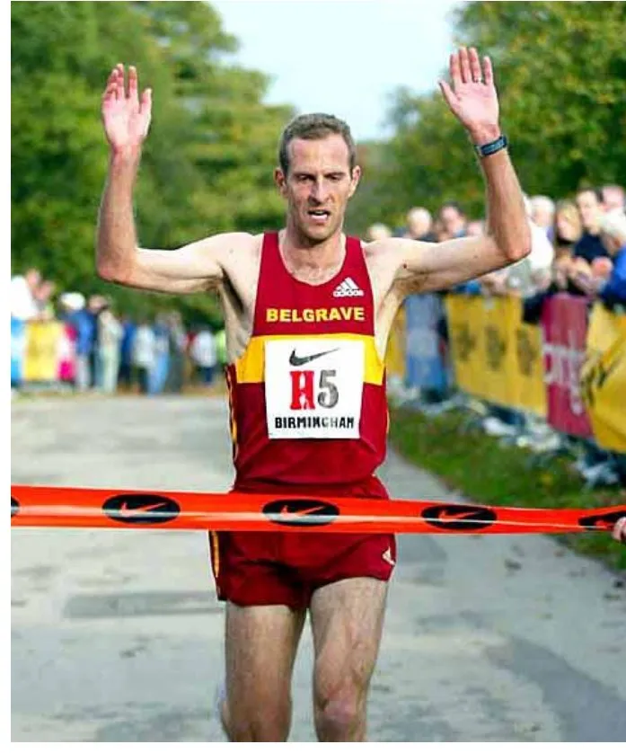<figcaption>Above: Spencer Barden takes the tape for Belgrave’s fifth consecutive National 6-Stage Road Relay win. Photo by Mark Shearman.</figcaption></figure>
<div class="body">
<p class="meta"><time datetime="2005-10-22">22 October 2005</time><span class="cat">road</span><span class="ann">25th · 22 October 2030</span></p>
<h3>A record fifth National 6-stage win in a row</h3>
<p class="printed"><span>As printed</span> Road Relay Glory</p>
<blockquote>“We set out some ten years ago to attempt to emulate the great road running teams – Tipton, Bingley, Birchfield, Gateshead.  This race was a beauty and although not wishing to show any signs of resting on our laurels, we can surely now say: “We are now up there with the best of them.””</blockquote>
<p class="why">A record fifth consecutive National 6-stage road relay title.</p>
<p class="foot"><a href="https://www.belgraveharriers.com/belgravian#B237-02" target="_blank" rel="noopener">Read it in The Belgravian, November 2005 · B237-02 →</a><span class="dsrc">Date as printed</span></p>
</div></article>
<article class="m photo">
<figure>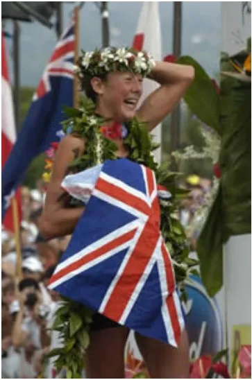<figcaption>Chrissie Wellington</figcaption></figure>
<div class="body">
<p class="meta"><time datetime="2007-10">October 2007</time><span class="cat">other</span><span class="ann">25th · October 2032</span></p>
<h3>Chrissie Wellington wins the World Ironman title</h3>
<p class="printed"><span>As printed</span> Chrissie Wellington Wins World Ironman Championship in Hawaii</p>
<blockquote>“She ended 2007 as Britain’s first ever World Ironman Champion, a remarkable feat, deemed to be a near impossible task for any athlete racing as a rookie at their first Ironman World Championships.”</blockquote>
<p class="why">Belgrave member Chrissie Wellington, who joined in 2006 to run cross-country for the Belles, becomes Britain&#x27;s first World Ironman champion as a rookie.</p>
<p class="foot"><a href="https://www.belgraveharriers.com/belgravian#B262-14" target="_blank" rel="noopener">Read it in The Belgravian, No. 262 · B262-14 →</a><span class="dsrc">Month from the issue; day not printed</span></p>
</div></article>
<section class="res" id="reserves">
<h2>Reserves</h2>
<p>70 strong candidates that were checked against the printed text and can be swapped in. Dots show strength (5 = must-have).</p>
<ul class="rl"><li><span class="rd">1927</span><a href="https://www.belgraveharriers.com/belgravian#B11-04" target="_blank" rel="noopener">The club mourns President Bob Ricketts, founder of its walking section</a><span class="rs">●●●</span></li><li><span class="rd">1928-05-12</span><a href="https://www.belgraveharriers.com/belgravian#B17-05" target="_blank" rel="noopener">Belgrave win the National road walking team title at Leicester</a><span class="rs">●●●</span></li><li><span class="rd">1928-07-17</span><a href="https://www.belgraveharriers.com/belgravian#B18-09" target="_blank" rel="noopener">Belgrave walkers march at Nijmegen with England&#x27;s team</a><span class="rs">●●●</span></li><li><span class="rd">1928-09-25</span><a href="https://www.belgraveharriers.com/belgravian#B20-03" target="_blank" rel="noopener">The gazette prints its first photograph: President Harry Hare</a><span class="rs">●●●</span></li><li><span class="rd">1929-02-09</span><a href="https://www.belgraveharriers.com/belgravian#B23-11" target="_blank" rel="noopener">Belgrave win the South of the Thames cross-country title for the first time</a><span class="rs">●●●</span></li><li><span class="rd">1929-11</span><a href="https://www.belgraveharriers.com/belgravian#B30-04" target="_blank" rel="noopener">Belchamber places Tommy Green among the greatest walkers</a><span class="rs">●●●●</span></li><li><span class="rd">1930-02</span><a href="https://www.belgraveharriers.com/belgravian#B33-03" target="_blank" rel="noopener">Bert Footer is the first Belgravian to win the South of the Thames</a><span class="rs">●●●</span></li><li><span class="rd">1930-04</span><a href="https://www.belgraveharriers.com/belgravian#B34-08" target="_blank" rel="noopener">How Belgrave became National walking champions, 1922-1929</a><span class="rs">●●●</span></li><li><span class="rd">1930-11-09</span><a href="https://www.belgraveharriers.com/belgravian#B41-19" target="_blank" rel="noopener">Tommy Green wins the 100 km walk in Milan</a><span class="rs">●●●●</span></li><li><span class="rd">1932-01</span><a href="https://www.belgraveharriers.com/belgravian#B49-18" target="_blank" rel="noopener">Harry Hare&#x27;s halfpenny plan for a club house</a><span class="rs">●●●</span></li><li><span class="rd">1932-07</span><a href="https://www.belgraveharriers.com/belgravian#B53-03" target="_blank" rel="noopener">Tommy Green picked for the Los Angeles Olympics</a><span class="rs">●●●</span></li><li><span class="rd">1933-02-25</span><a href="https://www.belgraveharriers.com/belgravian#B57-03" target="_blank" rel="noopener">Footer wins the Southern and Footer and Penny earn England vests</a><span class="rs">●●●●</span></li><li><span class="rd">1933-06</span><a href="https://www.belgraveharriers.com/belgravian#B59-19" target="_blank" rel="noopener">&#x27;Four Famous Walkers&#x27;: Green in his Olympic vest</a><span class="rs">●●●</span></li><li><span class="rd">1934-02-24</span><a href="https://www.belgraveharriers.com/belgravian#B63-04" target="_blank" rel="noopener">Belgrave win the Southern cross-country title for the first time</a><span class="rs">●●●●</span></li><li><span class="rd">1936-04-25</span><a href="https://www.belgraveharriers.com/belgravian#B73-03" target="_blank" rel="noopener">Bill Rice dies, aged 31, on Brighton Relay day</a><span class="rs">●●●</span></li><li><span class="rd">1936-08</span><a href="https://www.belgraveharriers.com/belgravian#B74-03" target="_blank" rel="noopener">Jim Ginty runs the steeplechase at the Berlin Olympics</a><span class="rs">●●●</span></li><li><span class="rd">1937-01-27</span><a href="https://www.belgraveharriers.com/belgravian#B76-03" target="_blank" rel="noopener">Belgrave&#x27;s cross-country team appears on television</a><span class="rs">●●●</span></li><li><span class="rd">1937-12-11</span><a href="https://www.belgraveharriers.com/belgravian#B80-10" target="_blank" rel="noopener">Paris club visits Wimbledon for the first international race at home</a><span class="rs">●●●</span></li><li><span class="rd">1938-06-06</span><a href="https://www.belgraveharriers.com/belgravian#B81-03" target="_blank" rel="noopener">Walkers win all three national road-walking team titles in one season</a><span class="rs">●●●●●</span></li><li><span class="rd">1938-09-27</span><a href="https://www.belgraveharriers.com/belgravian#B83-06" target="_blank" rel="noopener">The club meets under the shadow of the Munich crisis</a><span class="rs">●●●●</span></li><li><span class="rd">1939-03</span><a href="https://www.belgraveharriers.com/belgravian#B84-03" target="_blank" rel="noopener">Belgrave win the English Cross-Country title again, at Manchester</a><span class="rs">●●●●</span></li><li><span class="rd">1939-03</span><a href="https://www.belgraveharriers.com/belgravian#B84-23" target="_blank" rel="noopener">Belgrave look ahead to the 1940 Olympics that never happened</a><span class="rs">●●●</span></li><li><span class="rd">1940</span><a href="https://www.belgraveharriers.com/belgravian#B86-03" target="_blank" rel="noopener">Belgrave Hall keeps athletics going in the first winter of the war</a><span class="rs">●●●●</span></li><li><span class="rd">1940-08-24</span><a href="https://www.belgraveharriers.com/belgravian#B87-16" target="_blank" rel="noopener">Belgrave win a relay interrupted by an air raid warning</a><span class="rs">●●●</span></li><li><span class="rd">1943</span><a href="https://www.belgraveharriers.com/belgravian#B93-18" target="_blank" rel="noopener">Belgrave remembers members killed in the Second World War</a><span class="rs">●●●●</span></li><li><span class="rd">1944</span><a href="https://www.belgraveharriers.com/belgravian#B96-04" target="_blank" rel="noopener">Racing through the flying-bomb summer of 1944</a><span class="rs">●●●</span></li><li><span class="rd">1945-03-10</span><a href="https://www.belgraveharriers.com/belgravian#B97-23" target="_blank" rel="noopener">Derrick Burfitt wins the first National Youths&#x27; cross-country</a><span class="rs">●●●</span></li><li><span class="rd">1947-10-25</span><a href="https://www.belgraveharriers.com/belgravian#B103-11" target="_blank" rel="noopener">Diamond Jubilee dinner marks 60 years of Belgrave Harriers</a><span class="rs">●●●●</span></li><li><span class="rd">1948-08</span><a href="https://www.belgraveharriers.com/belgravian#B104-05" target="_blank" rel="noopener">Belgrave officials help run the 1948 Olympics</a><span class="rs">●●●</span></li><li><span class="rd">1948-08-07</span><a href="https://www.belgraveharriers.com/belgravian#B227-36" target="_blank" rel="noopener">Wartime member Etienne Gailly takes Olympic marathon bronze at Wembley</a><span class="rs">●●●</span></li><li><span class="rd">1950-03-16</span><a href="https://www.belgraveharriers.com/belgravian#B108-07" target="_blank" rel="noopener">Belgrave Hall in Wimbledon becomes the club&#x27;s own freehold</a><span class="rs">●●●●●</span></li><li><span class="rd">1954-07-31</span><a href="https://www.belgraveharriers.com/belgravian#B120-08" target="_blank" rel="noopener">Belgrave sprinters win their first AAA relay title</a><span class="rs">●●●</span></li><li><span class="rd">1955-07</span><a href="https://www.belgraveharriers.com/belgravian#B122-05" target="_blank" rel="noopener">Coach Franz Stampfl leaves Belgrave for Australia</a><span class="rs">●●●</span></li><li><span class="rd">1956-10-24</span><a href="https://www.belgraveharriers.com/belgravian#B129-13" target="_blank" rel="noopener">First inter-club floodlit meeting held at Tooting Bec</a><span class="rs">●●●</span></li><li><span class="rd">1956-11</span><a href="https://www.belgraveharriers.com/belgravian#B130-24" target="_blank" rel="noopener">Stan Vickers and Eric Hall walk for Britain at Melbourne</a><span class="rs">●●●●</span></li><li><span class="rd">1957-06-15</span><a href="https://www.belgraveharriers.com/belgravian#B131-33" target="_blank" rel="noopener">Belgrave walkers win all three national team titles in one season</a><span class="rs">●●●●</span></li><li><span class="rd">1960-07-16</span><a href="https://www.belgraveharriers.com/belgravian#B143-38" target="_blank" rel="noopener">Stan Vickers out-sprints Ken Matthews to break the 56-year-old two-mile walk record</a><span class="rs">●●●●</span></li><li><span class="rd">1960-09</span><a href="https://www.belgraveharriers.com/belgravian#B144-32" target="_blank" rel="noopener">Belgrave&#x27;s Ranjit Bhatia runs for India at the Rome Olympics</a><span class="rs">●●●</span></li><li><span class="rd">1963-10-12</span><a href="https://www.belgraveharriers.com/belgravian#B152-20" target="_blank" rel="noopener">Belgrave win the Southern London-to-Brighton relay for the first time in 11 years</a><span class="rs">●●●●</span></li><li><span class="rd">1964-08-09</span><a href="https://www.belgraveharriers.com/belgravian#B154-47" target="_blank" rel="noopener">Belgrave make their first overseas club tour, to Langen in West Germany</a><span class="rs">●●●●</span></li><li><span class="rd">1965-10-09</span><a href="https://www.belgraveharriers.com/belgravian#B157-28" target="_blank" rel="noopener">Belgrave launch their own road relay and beat Portsmouth by 14 seconds</a><span class="rs">●●●</span></li><li><span class="rd">1966-02-26</span><a href="https://www.belgraveharriers.com/belgravian#B158-61" target="_blank" rel="noopener">Belgrave win the North Surrey Cross-Country League for the first time</a><span class="rs">●●●</span></li><li><span class="rd">1968-09/1969-08</span><a href="https://www.belgraveharriers.com/belgravian#B172-58" target="_blank" rel="noopener">Belgrave walkers win three of the four national team titles</a><span class="rs">●●●</span></li><li><span class="rd">1969-11-22</span><a href="https://www.belgraveharriers.com/belgravian#B172-63" target="_blank" rel="noopener">Tommy Green starts the 50th Belgrave Open Seven walk</a><span class="rs">●●●</span></li><li><span class="rd">1970-09-15</span><a href="https://www.belgraveharriers.com/belgravian#B176-50" target="_blank" rel="noopener">Ray Middleton wins the European postmen&#x27;s walk in full uniform</a><span class="rs">●●●</span></li><li><span class="rd">1972-09</span><a href="https://www.belgraveharriers.com/belgravian#B179-100" target="_blank" rel="noopener">Laurie O&#x27;Hara wins the world veterans&#x27; 5,000m title in Cologne</a><span class="rs">●●●</span></li><li><span class="rd">1975-03-01</span><a href="https://www.belgraveharriers.com/belgravian#B189-69" target="_blank" rel="noopener">Tommy Green, 1932 Olympic walk champion, dies aged 80</a><span class="rs">●●●●</span></li><li><span class="rd">1975-09-06</span><a href="https://www.belgraveharriers.com/belgravian#B190-62" target="_blank" rel="noopener">Belgrave win the 50th London to Brighton walk, individually and as a team</a><span class="rs">●●●●</span></li><li><span class="rd">1975-11-22</span><a href="https://www.belgraveharriers.com/belgravian#B191-12" target="_blank" rel="noopener">Belgrave&#x27;s first trophy, the 1897 Haig Cup, returns to the club</a><span class="rs">●●●</span></li><li><span class="rd">1976-02-08</span><a href="https://www.belgraveharriers.com/belgravian#B191-51" target="_blank" rel="noopener">Belgrave boys run 50 x 1 mile relay to send John Bicourt to the Olympics</a><span class="rs">●●●●</span></li><li><span class="rd">1976-11-14</span><a href="https://www.belgraveharriers.com/belgravian#B193-13" target="_blank" rel="noopener">Death of Ed Lacey, sports photographer and Belgrave member</a><span class="rs">●●●</span></li><li><span class="rd">1978-12-03</span><a href="https://www.belgraveharriers.com/belgravian#B198-96" target="_blank" rel="noopener">Belgrave women win their first national team medals</a><span class="rs">●●●●</span></li><li><span class="rd">1979-05-12</span><a href="https://www.belgraveharriers.com/belgravian#B199-60" target="_blank" rel="noopener">Carl Lawton wins the national 20km walk and Belgrave take the team title</a><span class="rs">●●●</span></li><li><span class="rd">1981-03-29</span><a href="https://www.belgraveharriers.com/belgravian#B202-90" target="_blank" rel="noopener">33 Belgravians run the first London Marathon</a><span class="rs">●●●</span></li><li><span class="rd">1981-09-05</span><a href="https://www.belgraveharriers.com/belgravian#B203-17" target="_blank" rel="noopener">Walker Dave King killed during the London to Brighton race</a><span class="rs">●●●</span></li><li><span class="rd">1981-09-11</span><a href="https://www.belgraveharriers.com/belgravian#B203-68" target="_blank" rel="noopener">Ernest Obeng beats Olympic champion Allan Wells over 100m</a><span class="rs">●●●</span></li><li><span class="rd">1984-03-25</span><a href="https://www.belgraveharriers.com/belgravian#B207b-40" target="_blank" rel="noopener">Belgrave win the Wellington International Relay in Ostend</a><span class="rs">●●●</span></li><li><span class="rd">1986</span><a href="https://www.belgraveharriers.com/belgravian#B210-40" target="_blank" rel="noopener">John Gladwin takes Commonwealth 1500m silver behind Steve Cram</a><span class="rs">●●●●</span></li><li><span class="rd">1987-01-17</span><a href="https://www.belgraveharriers.com/belgravian#B211-43" target="_blank" rel="noopener">Centenary cross-country race on Wimbledon Common</a><span class="rs">●●●●</span></li><li><span class="rd">1987-05-09</span><a href="https://www.belgraveharriers.com/belgravian#B212-29" target="_blank" rel="noopener">Belgrave reach Division 1 of the British League</a><span class="rs">●●●</span></li><li><span class="rd">1987-09</span><a href="https://www.belgraveharriers.com/belgravian#B212-36" target="_blank" rel="noopener">John Regis wins World Championships 200m bronze in a UK record</a><span class="rs">●●●●</span></li><li><span class="rd">1987-10-04</span><a href="https://www.belgraveharriers.com/belgravian#B212-39" target="_blank" rel="noopener">Gary Staines runs a solo sub-four-minute mile at Battersea Park</a><span class="rs">●●●●</span></li><li><span class="rd">1988</span><a href="https://www.belgraveharriers.com/belgravian#B212-02" target="_blank" rel="noopener">Sue Morrison becomes the club&#x27;s first woman secretary</a><span class="rs">●●●●</span></li><li><span class="rd">1988-10</span><a href="https://www.belgraveharriers.com/belgravian#B213-41" target="_blank" rel="noopener">John Regis wins Olympic relay silver in Seoul</a><span class="rs">●●●●●</span></li><li><span class="rd">1990-01</span><a href="https://www.belgraveharriers.com/belgravian#B214-51" target="_blank" rel="noopener">Belgravians win four golds at the Auckland Commonwealth Games</a><span class="rs">●●●</span></li><li><span class="rd">1994-02-19</span><a href="https://www.belgraveharriers.com/belgravian#B222-137" target="_blank" rel="noopener">Belgrave women win the Surrey Cross Country League in their first top-flight season</a><span class="rs">●●●</span></li><li><span class="rd">1996-04-21</span><a href="https://www.belgraveharriers.com/belgravian#B224-70" target="_blank" rel="noopener">Belgrave win the London Marathon team title</a><span class="rs">●●●</span></li><li><span class="rd">1996-12-14</span><a href="https://www.belgraveharriers.com/belgravian#B225-127" target="_blank" rel="noopener">Belgrave win the Surrey cross-country title for the first time in 30 years</a><span class="rs">●●●</span></li><li><span class="rd">2000-06-01</span><a href="https://www.belgraveharriers.com/belgravian#B229-10" target="_blank" rel="noopener">Battersea Park track reopens as the Millennium Arena</a><span class="rs">●●●</span></li><li><span class="rd">2008-08</span><a href="https://www.belgraveharriers.com/belgravian#B267-05" target="_blank" rel="noopener">Idowu takes Olympic silver and Sayers sets a British record in Beijing</a><span class="rs">●●●</span></li></ul>
<h2>Dropped from the first shortlist</h2>
<p>Checked and left out, with the reason.</p>
<ul class="dl"><li><a href="https://www.belgraveharriers.com/belgravian#B41-19" target="_blank" rel="noopener">B41-19</a> Strong, but three Tommy Green moments already; kept as first reserve.</li><li><a href="https://www.belgraveharriers.com/belgravian#B211-43" target="_blank" rel="noopener">B211-43</a> Covered by the centenary birthday moment (B212-16).</li><li><a href="https://www.belgraveharriers.com/belgravian#B17-05" target="_blank" rel="noopener">B17-05</a> Real (12 May 1928, Leicester) but the club&#x27;s third National walking title, not the first (first was 1924, per B34-08).</li><li><a href="https://www.belgraveharriers.com/belgravian#B227-36" target="_blank" rel="noopener">B227-36</a> Used as the photo for the 1948 Olympics moment (B104-04).</li><li><a href="https://www.belgraveharriers.com/belgravian#B195-30" target="_blank" rel="noopener">B195-30</a> Lawton 6th, first Briton behind the Mexicans: good background, not a club landmark.</li><li><a href="https://www.belgraveharriers.com/belgravian#B200-71" target="_blank" rel="noopener">B200-71</a> A Surrey youths title; the &quot;record&quot; is never explained.</li><li><a href="https://www.belgraveharriers.com/belgravian#B13-09" target="_blank" rel="noopener">B13-09</a> Not a 1927 moment: a walking-notes preview in the Jan 1928 issue; the same roll (to 1924) is in No. 1. Drop.</li><li><a href="https://www.belgraveharriers.com/belgravian#B88-25" target="_blank" rel="noopener">B88-25</a> Second place, not a win.</li><li><a href="https://www.belgraveharriers.com/belgravian#B162-63" target="_blank" rel="noopener">B162-63</a> Vivid memories, but of national events (1946-57), not club history.</li><li><a href="https://www.belgraveharriers.com/belgravian#B166-10" target="_blank" rel="noopener">B166-10</a> Overtaken by the 1969 silver (B170-14).</li></ul>
</section>
<footer>Belgrave Harriers · draft 14 November 2026. Data: belgravian/moments/moments.json and longlist.json.</footer>
</div></main>
